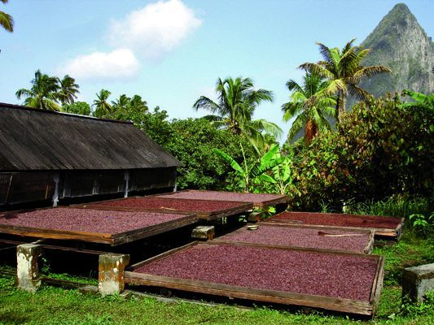
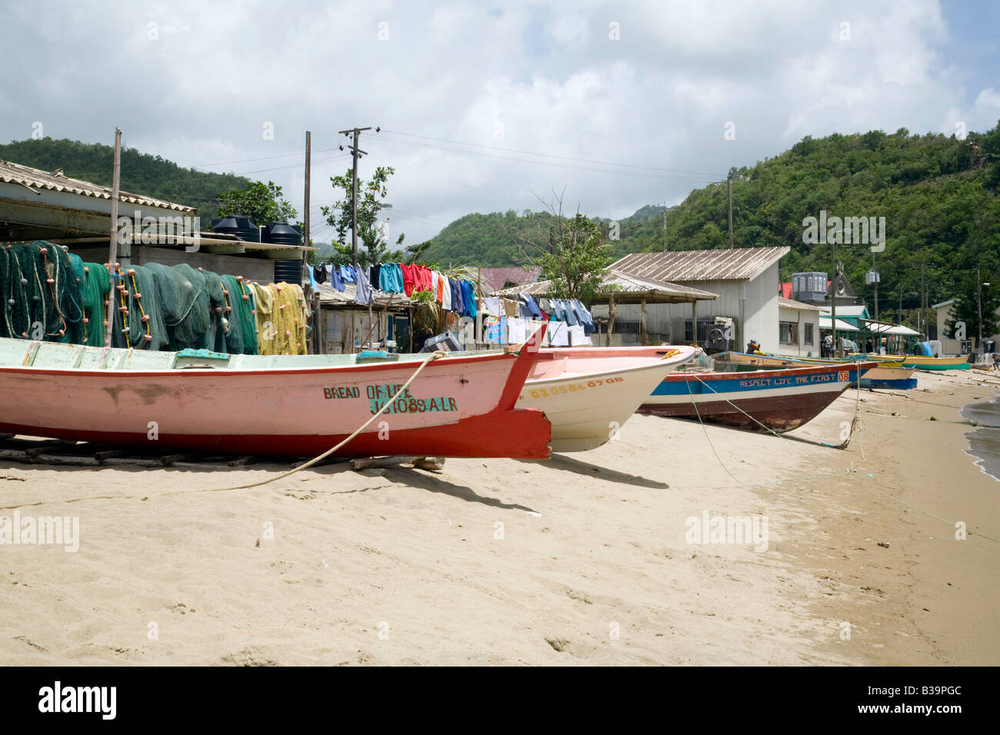
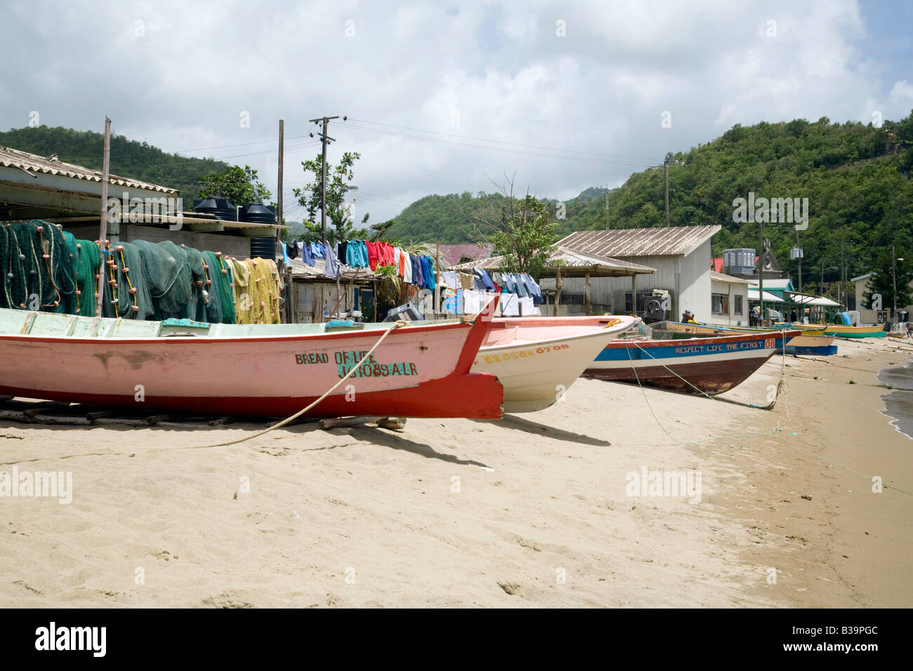

Turystyka i Hotelarstwo
▼Turystyka i Hotelarstwo

Trend Przyjazdów Turystycznych
| Rok | Pobyty | Rejsy | Łącznie Odwiedzający | Przychody z Turystyki |
|---|---|---|---|---|
| 2019 (rekord) | 423 736 | 798 176 | 1 288 111 | EC$2 604 mln (~US$964 mln) |
| 2020 (COVID) | 130 695 | 297 885 | 458 943 | — |
| 2021 | 199 347 | 93 610 | 301 675 | EC$1 524 mln (~US$564 mln) |
| 2022 | 356 237 | 349 922 | 729 063 | EC$2 841 mln (~US$1 052 mln) |
| 2023 | 380 791 | 614 980 | 1 036 066 | EC$3 068 mln (~US$1 136 mln) |
| 2024 (nowy rekord) | 435 659 | 823 132 (459 zawinięć) | ~1 259 000+ | — |
| 2025 (sty–lis) | ~385 160 (~4% spadek r/r) | Cel: 750 000 (sezon 2025–26) | — | — |
| Lis 2025 | +7% r/r (rekordowy listopad) | — | — | Najlepszy miesiąc 2025; ożywienie pod koniec roku |
| Wskaźnik | Wartość | Uwagi |
|---|---|---|
| Główny rynek – USA | ~65% pobytów (2025) | Wzrost z 57% w 2024, 45% w 2019; rosnąca dominacja napędzana rozszerzeniem połączeń lotniczych z USA |
| Wielka Brytania | ~12-15% (spadek) | +4% w 2024, ale spadek o 15–23% w 2025; Virgin Atlantic i TUI wycofały bezpośrednie połączenia z Londynu; pozostał tylko BA |
| Karaiby | ~17% wzrost (2024) | Napędzany Karnawałem, Festiwalem Jazzowym, krykietem |
| Kanada | Spadek | Ostrzeżenie: spadek o 16–22% w 2025 (MFW/SLTA) |
| Śr. długość pobytu | 7,9–8,7 nocy | Goście z Wielkiej Brytanii najdłużej ~10 nocy |
| Bezpośrednie zatrudnienie | ~16 500 miejsc pracy (21,5%) | Najwyższa jakość zatrudnienia w turystyce karaibskiej (WTTC) |
| Zatrudnienie ogółem | ~36 000 miejsc pracy (46,3%) | Bezpośrednie + pośrednie + indukowane |
| Baza hotelowa | ~5 500-6 500 pokoi | ~2 000 nowych pokoi w planach (+20% pojemności). Secrets (355 pokoi) otwarty cze 2025. Cas en Bas (90 apartamentów), Courtyard Marriott (140), Sapphire Sands (9 willi) otwarcie 2026. |
| Obłożenie na Karaibach (2024) | 70,8% | ADR US$374; RevPAR US$265 |
Połączenia Lotnicze (Hewanorra — UVF)
| Rynek | Linie lotnicze | Kluczowe trasy |
|---|---|---|
| USA | American, JetBlue, Delta, United | Miami (codziennie + 2. lot dzienny paź–sty), Charlotte, JFK (8 lotów/tydzień łącznie: AA wznowiło 20 gru 2025; JB codziennie + 2. lot sob od 22 lis 2025), Philadelphia, Boston (JB 2x/tydzień), Atlanta (Delta codziennie + 2. lot dzienny gru 2025), Newark, Chicago ORD (United sob od lis 2025) |
| Wielka Brytania | British Airways JEDYNE | London Gatwick (jedyne bezpośrednie z UK od 2025). Virgin Atlantic wycofał się po 21 latach obsługi trasy Londyn–St Lucia. TUI wstrzymał połączenie bezpośrednie z Gatwick. Poważna utrata łączności z rynkiem brytyjskim. |
| Kanada | Air Canada, WestJet | Toronto (2x tygodniowo każda) |
| Karaiby (przez SLU) | InterCaribbean, Caribbean Airlines, LIAT 2020, Sunrise | Barbados, Dominika, St. Vincent, Port of Spain |
American Airlines zwiększyły przepustowość Charlotte i Miami o 53% w 2024, napędzając wzrost przyjazdów z USA. Na zimę 2025–26, American wznowiło JFK–UVF (sob od 20 gru 2025) i dodało 2. lot dzienny z Miami (paź–sty); JetBlue dodało 2. tygodniowy lot z JFK (sob od 22 lis 2025), dając łącznie 8 lotów/tydzień z JFK–UVF; Delta dodała 2. lot dzienny z Atlanty (gru 2025–lato 2026); JetBlue dodało 2. lot z Bostonu; United wznowił Chicago ORD sob (lis 2025–lato 2026). Łączna przepustowość lotnicza z USA: +12 000 dodatkowych miejsc, ~4% wzrost przepustowości na zimę 2025–26. JetBlue, American Airlines i United utrzymują lub rozszerzają trasy karaibskie. ~49 lotów/tydzień do 9+ bezpośrednich destynacji z George F.L. Charles (SLU) dla usług międzywyspowych.
Kryzys Połączeń Lotniczych z UK (2025)
Virgin Atlantic wycofał trasę Londyn–St Lucia po 21 latach nieprzerwanej obsługi, co stanowi poważny cios dla łączności z Wielką Brytanią. TUI również wstrzymał bezpośredni lot z Gatwick. British Airways jest teraz jedyną pozostałą linią z bezpośrednim połączeniem z Londynu do St Lucia. Przyloty z UK spadły o 15–23% w 2025, a z Kanady o 16–22%. Rynek amerykański stanowi obecnie około 65% wszystkich pobytów, budząc obawy o nadmierne uzależnienie od jednego rynku źródłowego. SLTA i Minister Turystyki aktywnie poszukują zastępczych brytyjskich przewoźników i badają możliwości lotów czarterowych.
Przemysł Wycieczkowy
Sezon rejsów wycieczkowych 2024–25 ustanowił nowy rekord: 823 132 pasażerów przy 459 zawinięciach statków, wzrost z 614 980 przy 264 zawinięciach w poprzednim sezonie — 17,6% wzrost pasażerów r/r. Łączne wydatki turystyki rejsowej (2024): US$72,7 mln (FCCA). Średnie wydatki: US$104,36 za wizytę na lądzie. Szczyt: grudzień 2024 (135 000 pasażerów na 62 statkach). 20+ linii rejsowych zawija do Saint Lucia, w tym Royal Caribbean, Carnival, Celebrity, MSC i Disney. Jednakże przyloty rejsowe w 2025 spadły o 11% w szczycie sezonu.
Rzeczywisty Wpływ Przychodów z Rejsów
Pasażerowie rejsowi stanowią ponad 50% łącznych przyjazdów, ale generują zaledwie 8–10% przychodów z turystyki. Turyści pobytowi wydają US$103–531/dzień w porównaniu z pasażerami rejsowymi ~US$104/wizytę. Opłata od głowy wynosi $12,50/pasażer łącznie, zrestrukturyzowana tak, że rząd zatrzymuje tylko $2,50 ($10 trafia do GPH w ramach 30-letniej koncesji portowej od maja 2024). Ta struktura przychodów wzbudziła krytykę biorąc pod uwagę skalę operacji rejsowych.
Obiekty Portowe i Rozbudowa
| Pointe Seraphine | Większy/nowoczesny terminal, 25+ sklepów duty-free, nowy pomost dla cumowania 2 statków klasy Quantum jednocześnie |
| La Place Carenage (QE II Wharf) | Lokalizacja w centrum, 6 nabrzeży, centrum handlowe |
| Maksymalna pojemność | 5 statków jednocześnie w dniach szczytu |
| Operator portu | Global Ports Holding (GPH) — 30-letnia koncesja (od maja 2024) |
Rozbudowa portu GPH (planowane ukończenie paź 2026): Rozbudowa nabrzeży dla mega-statków klasy Icon/Oasis (6 500+ pasażerów), nowy deptak do centrum Castries, nowa Pasaż Handlowy + Wioska Rybacka w Banannes Bay, rewitalizacja nabrzeża Soufriere dla tenderów. Cel: 1 mln+ pasażerów rejsowych rocznie. Rozbiórka i przebudowa trwa od stycznia 2025, z planowanym ukończeniem w październiku 2026. Cel sezonu rejsowego 2025–26 to 750 000 pasażerów.
Możliwości Wycieczek Brzegowych
Najpopularniejsze wycieczki brzegowe: wulkan Soufriere/kąpiele błotne, Pigeon Island, rejsy katamaranem, tyrolka, wycieczki po lesie deszczowym. Główni operatorzy: Cosol Tours, Spencer Ambrose Tours, Island Man Taxi. Prywatne grupy wycieczkowe: ~US$45/osoba. Licencjonowani operatorzy wycieczek mogą zawierać umowy bezpośrednio z liniami rejsowymi na obsługę wycieczek pasażerskich.
Planowane Inwestycje Hotelowe (2025–2027)
| Projekt | Pokoje | Status |
|---|---|---|
| Secrets St. Lucia Resort & Spa (Hyatt Inclusive Collection) | 355 | Otwarty 1 czerwca 2025, Choc Beach. All-inclusive, tylko dla dorosłych. Marka Hyatt. |
| Cas en Bas Beach Resort (Destination by Hyatt) | 90 apartamentów | Faza 1 wyprzedana. Cap Estate. Julien Alfred (złota medalistka olimpijska) ambasadorką marki. Otwarcie 2026. |
| TheLifeCo Wellness (A'ila Faza 1) | 65 | Otwarty 2025 |
| Courtyard by Marriott, Pointe Seraphine | 140 | W budowie, otwarcie 2026 |
| Sapphire Sands Villas (Bay Gardens) | 9 willi | Otwarcie luty 2026, Rodney Bay |
| A'ila Palm Hotel Rodzinny (Faza 2) | 153 | W budowie, 2026 |
| Grand Hyatt Saint Lucia, Choiseul | 345 | Etap przygotowawczy, 2026 (opóźniony) |
| A'ila Cove Tylko Dorośli (Faza 3) | 320 | Planowany, 2027 |
| Cabot Saint Lucia, Cap Estate | 320 domów + hotel 40 apartamentów | Point Hardy Golf Club otwarty. Horizon Villas (od $5,6 mln) + Fairway Residences ($3 mln–$5 mln) oddanie 2025–26. Klubowy budynek 2026. |
| La Belle Hélène (Windjammer Landing) | 10 luksusowych willi | Ogłoszony 2025; w pobliżu Pitons. Windjammer przechodzi renowację za US$40 mln. |
Mega-Projekty i Główne Rozbudowy
| Projekt | Skala | Status |
|---|---|---|
| Pearl of the Caribbean, Vieux Fort | Plan zagospodarowania za US$2,6 mld: luksusowy kurort, marina, golf, dzielnica handlowa, osiedle | 15-letni rozwój etapowy |
| A'ILA (pełna realizacja) | 312 jednostek mieszkalnych, 90 luksusowych willi, 21 restauracji, $870 mln–$1,3 mld łącznie | Faza 1 otwarta 2025; Fazy 2–3 w budowie / planowane |
| Coconut Bay | Rozbudowa za US$80 mln + renowacja za US$24 mln | W trakcie realizacji |
| Windjammer Landing | Renowacja za US$40 mln + posiadłość La Belle Hélène | Ogłoszony 2025 |
Turystyka jest podstawą gospodarki Saint Lucia, generując większość wpływów dewizowych i zatrudnienia. Wyspa jest konsekwentnie zaliczana do najlepszych destynacji karaibskich.
Podsektory
- Luksusowe Kurorty i Hotele - Obiekty premium jak Jade Mountain, Sugar Beach, Sandals. Silny popyt na hotele butikowe.
- Ekoturystyka i Przygoda - Wycieczki po lesie deszczowym, atrakcje wulkaniczne, nurkowanie, piesze wędrówki, tyrolka. Rosnący segment.
- Turystyka Rejsowa - Rekordowy sezon 2024–25: 823 132 pasażerów przy 459 zawinięciach. Rozbudowa portu GPH za US$135 mln w trakcie (ukończenie paź 2026). Możliwości wycieczek brzegowych.
- Turystyka Wellness - Kurorty spa, wulkaniczne kąpiele błotne, źródła termalne. Rozwijająca się nisza o wysokiej wartości.
- Turystyka Ślubna i Romantyczna - St. Lucia jest jednym z topowych miejsc na ślub destynacyjny na świecie.
- Turystyka Kulturalna - Festiwal jazzowy, karnawał, dziedzictwo kreolskie, turystyka kulinarna.
- Żeglarstwo i Mariny - Rodney Bay Marina (253 stanowiska, max 285 stóp), Marigot Bay (42 stanowiska, max 280 stóp). Opłaty za licencję czarterową EC$200–EC$1 350. Gospodarz regat ARC od 1986 (~145 jachtów w 2025). Rosnący sektor żeglarski/czarterowy.
Najważniejsze Atrakcje i Cennik
| Atrakcja | Cena (USD) | Uwagi |
|---|---|---|
| The Pitons (UNESCO) | $60-$200 | Wędrówka z przewodnikiem na Gros Piton (2 530 stóp) |
| Sulphur Springs (wulkan samochodowy) | $40-$80 | ~200 000 odwiedzających rocznie; kąpiele błotne |
| Całodzienny katamaran do Soufriere | $100-$175 | Najpopularniejsza wycieczka; snorkeling, wodospady |
| Nurkowanie (2 zbiorniki) | $100-$160 | Rafa Anse Chastanet, Superman's Flight |
| Tyrolka w lesie deszczowym | $80-$120 | Morne Coubaril Estate, Soufriere |
| Wycieczka od drzewa do tabliczki Hotel Chocolat | $125 | Z lunchem w Rabot Estate |
| Obserwacja wielorybów i delfinów | $55-$100 | Najlepiej: gru-kwi |
Zachęty
Ustawa o Zachętach Turystycznych zapewnia: ulgi podatkowe dla zatwierdzonych projektów hotelowych, bezcłowy import materiałów budowlanych i sprzętu, dotacje szkoleniowe. Invest Saint Lucia ułatwia procesy zatwierdzania.
Możliwości
- Budowa hoteli butikowych (niedostatecznie obsłużony segment średni)
- Eko-domki i doświadczenia agroturystyczne
- Usługi operatorów turystycznych i dostawców atrakcji
- Koncepcje restauracyjne i gastronomiczne
- Rozwiązania technologiczne dla sektora turystycznego
Rolnictwo i Agrobiznes
▼Rolnictwo i Agrobiznes

Choć maleje w porównaniu z historyczną dominacją, rolnictwo pozostaje znaczącym pracodawcą i priorytetem rządu w zakresie bezpieczeństwa żywnościowego i dywersyfikacji eksportu. Większość gospodarstw ma mniej niż 5 akrów, a sektor jest zdominowany przez drobnych rolników. Nowy Spis Rolnictwa i Rybołówstwa został przeprowadzony w 2024 roku (pierwszy od 17 lat), dostarczając pierwsze kompleksowe dane o sektorze od 2007 roku. Sektor rolny odbił się o 3,6% w 2024, wsparty lepszymi warunkami pogodowymi.
Zależność od Importu Żywności — Krytyczna Podatność
Rachunek za import żywności Saint Lucia osiągnął EC$1,5 mld (~US$556 mln) w 2023 (ECCB Food Import Bill Tracker), przy szacowanej zależności od importu na poziomie 80–90%. Import żywności stanowi 27,64% całego importu towarowego. Rolnictwo wnosi mniej niż 3% PKB, ale zapewnia 20% miejsc pracy, przy około 18% gruntów wykorzystywanych do upraw (większość gospodarstw poniżej 5 akrów). Cel CARICOM „25 do 2025” dotyczący redukcji regionalnego rachunku za import żywności został przedłużony do 2030. Ceny żywności stale rosną od 2020, ze wzrostami o 8–31% we wszystkich kategoriach importowych.
Główne kategorie importu: Tłuszcze i oleje (31,3%), nabiał/jaja (17,9%), mięso/owoce morza (16,5%), produkty podstawowe/zboża (15,4%), cukier/miód (15,2%), owoce/warzywa (10,7%). Główne kraje źródłowe: USA, Trynidad i Tobago, Wielka Brytania, Jamajka, Barbados, Francja.
Rządowy Program Substytucji Importu Siedmiu Upraw dąży do samowystarczalności w produkcji kapusty, pomidorów, sałaty, papryki słodkiej, arbuza, melona kantalupa i ananasa, z celem 100% samowystarczalności w pomidorach, ananasach, papryce i arbuzach. Saint Lucia jest obecnie samowystarczalna jedynie w jajach.
Strategia Bezpieczeństwa Żywnościowego (2025)
| Inicjatywa | Szczegóły |
|---|---|
| Krajowa Grupa Zadaniowa ds. Bezpieczeństwa Żywnościowego i Żywieniowego | Utworzona w celu koordynacji polityki bezpieczeństwa żywnościowego w ramach rządu |
| 3-letni Plan Strategiczny | Kompleksowy plan zwiększenia krajowej produkcji żywności |
| Krajowy Zakład Przetwórstwa Mięsnego | W fazie projektowania; ma na celu redukcję importu mrożonego mięsa |
| Centrum Hydroponiczne | Współpraca SLU-Gujana — zużywa 95% mniej wody niż tradycyjne rolnictwo |
| Szkolenie z Akwaponiki | 50 osób przeszkolonych (2023, partnerstwo z Tajwanem) |
| Cel Produkcji Drobiu | 35–40% konsumpcji (obecnie głównie importowany) |
Przetwórstwo Żywności i Krajobraz Handlu Detalicznego
| Firma / Sieć | Szczegóły |
|---|---|
| Baron Foods Ltd (Vieux Fort) | 150+ produktów, certyfikat FSSC 22000, eksport do 35+ krajów (USA/Kanada/Europa/Karaiby) |
| Windward & Leeward Brewery | Piton Beer (spółka zależna Heineken) — produkt eksportowy nr 1 (~$11,3 mln) |
| Viking Traders (zał. 1979) | 100+ nagradzanych produktów spożywczych |
| Winfresh (państwowa) | Sosy pieprzowe, eksport rolny |
| Massy Stores | 13 lokalizacji (największa sieć, przejęła Super J IGA 2016) |
| Cost-U-Less | Supermarket w modelu hurtowni |
| CFL / Glace / Shoprite | Dodatkowe sieci supermarketów obsługujące rynek krajowy |
Koszty zakupów spożywczych (2026): Lokalne produkty są bardzo przystępne cenowo (banany EC$2,21/funt, jajka EC$11,32/tuzin). Towary importowane są o 30–50% droższe niż w Ameryce Północnej. Miesięczny budżet na zakupy: US$350–500 (osoba, budżetowo) lub US$900–1 250 (rodzina 4-osobowa). Siedem stref przemysłowych z halami fabrycznymi (370–2 970 m²) jest dostępnych dla przedsięwzięć przetwórstwa spożywczego.
Przegląd Produkcji Rolnej
| Uprawa / Produkt | Areał | Szac. Produkcja Roczna | Główny Rynek | Trend |
|---|---|---|---|---|
| Banany | ~14 826 akrów | ~7 000–10 000 ton | Kanada (nowy 2024), krajowy | Spadek (szczyt 132 tys. ton w 1992; eksport ~US$1,03 mln w 2023) |
| Kokosy | ~12 400 akrów | ~3 500 ton | Krajowy, eksport regionalny | Stabilny / rewitalizacja w toku |
| Kakao | ~1 700 akrów | ~150–200 ton | Eksport premium (UK, UE) | Wzrost (napędzany agroturystyką) |
| Dasheen (taro) | ~800 akrów | ~1 200 ton | Krajowy, diaspora (UK/Kanada) | Stabilny |
| Ignam | ~500 akrów | ~800 ton | Konsumpcja krajowa | Stabilny (niedobory materiału sadzeniowego) |
| Batat | ~400 akrów | ~600 ton | Konsumpcja krajowa | Stabilny |
| Owoc chlebowy | Uprawa mieszana | ~500 ton | Krajowy (produkt podstawowy) | Stabilny |
| Mango | Uprawa mieszana | Sezonowa nadwyżka | Krajowy, częściowy eksport | Stabilny (potencjał przetwórczy) |
| Warzywa (7 Upraw) | ~1 500 akrów | ~2 000 ton łącznie | Krajowy (substytucja importu) | Wzrost (priorytet rządowy) |
| Mech morski | Akwakultura przybrzeżna | ~200+ ton (suszony) | USA, Kanada, eksport karaibski | Szybki wzrost |
| Miód | 190–280 uli | ~5–10 ton | Krajowy, rozwijający się eksport | Wzrost (klaster finansowany przez IDB) |
| Kawa | ~50 akrów (szac.) | Mała skala | Krajowy rynek specjalistyczny | Rozwijający się (mikro-producenci) |
Większość owoców tropikalnych (marakuja, guawa, graviola, golden apple, papaja) jest uprawiana przez cały rok w uprawach mieszanych na konsumpcję krajową z ograniczonym przetwórstwem. CARDI (Karaibski Instytut Badań i Rozwoju Rolnictwa) prowadzi centrum demonstracyjne wspierające mnożenie materiału sadzeniowego roślin okopowych dla rolników.
Przegląd Eksportu
Łączny eksport: ~US$53,5 mln (2022). Saint Lucia ma znaczny deficyt handlowy (~US$465 mln), co czyni wzrost eksportu priorytetem krajowym.
| Główne Eksporty | Wartość | Destynacja |
|---|---|---|
| Piton Beer | ~$11,3 mln | Kraje OECS |
| Mech morski | ~$5,6 mln (2024) | USA, Kanada, Karaiby |
| Żwir i kamień łamany | ~$5,7 mln | Regionalnie |
| Pojemniki papierowe | ~$3,4 mln | Regionalnie |
| Rum i alkohole | ~$2,8 mln | Światowy |
| Banany | ~$1,0 mln | Kanada (nowy rynek 2024) |
Główne kierunki eksportu: USA (~$9,2 mln), Gujana (~$8,7 mln), Trynidad i Tobago (~$7,6 mln), Barbados (~$4,7 mln). Marka „Taste of Saint Lucia” (uruchomiona w 2018 przez Export Saint Lucia) promuje lokalne produkty premium na arenie międzynarodowej.
Przemysł Bananowy — Schyłek i Dywersyfikacja
Przemysł bananowy był niegdyś podstawą gospodarki Saint Lucia, generując do 70% dochodów z eksportu i zatrudniając ponad 25% siły roboczej w szczytowym okresie. Jego upadek jest jedną z najbardziej dramatycznych transformacji rolniczych na Karaibach.
Chronologia Przemysłu Bananowego
| Rok | Wydarzenie | Produkcja / Wpływ |
|---|---|---|
| 1953 | Geest Industries podpisuje kontrakt ze Stowarzyszeniami Plantatorów Bananów | Sformalizowanie branży; preferencyjny dostęp do rynku UK |
| Lata 60–70. | Szybka ekspansja; banany wypierają cukier jako główny eksport | 50 000–80 000 ton; 60–70% przychodów z eksportu |
| Lata 80. | Szczytowy okres; stały eksport powyżej 100 000 ton rocznie | Do 70% dochodów eksportowych; ~25 000 zatrudnionych |
| 1992 | Historyczny szczyt produkcji | 132 854 tony; US$71 mln przychodu; ~10 000 rolników |
| 1993 | Jednolity Rynek Bananów UE zastępuje preferencje Konwencji z Lomé | Ograniczenie preferencyjnego dostępu dla bananów ACP; początek schyłku |
| 1995–97 | WTO orzeka przeciwko preferencjom bananowym UE (skarga Chiquita/USA) | Produkcja spada o 50% do 1997; rolnicy zaczynają porzucać uprawę |
| 2005 | Dalszy spadek; uruchomienie programów dywersyfikacji | ~30 000 ton; US$31 mln przychodu; ~1 800 rolników |
| 2010 | Huragan Tomas (paź 2010) dewastuje gospodarstwa na całej wyspie | Znaczne straty upraw; dalsze odchodzenie rolników |
| 2017 | WINFA (Stowarzyszenie Rolników Wysp Nawietrznych) konsoliduje działania Fairtrade | Saint Lucia staje się jedynym eksporterem bananów Fairtrade z Wysp Nawietrznych |
| 2022 | Handel bananami z UK zawieszony | ~7 015 ton; ~500 rolników pozostaje |
| 2024 | NFTO wysyła pierwsze banany do Kanady (nowy rynek) | Produkcja przewyższa popyt na początku 2024; Burza Tropikalna Bret niszczy 75% upraw |
Saint Lucia jest teraz jedyną Wyspą Nawietrzną nadal sprzedającą banany Fairtrade. NFTO (Krajowa Organizacja Sprawiedliwego Handlu) jest własnością rolników i przez nich zarządzana. Rząd przekazał ponad $400 000 w postaci dotacji do nakładów poprzez NFTO. Tajwańska Misja Techniczna wprowadziła odmiany bananów odporne na suszę i wiatr (Tai-Chiao Nr 2) w celu poprawy odporności.
Kakao i Czekolada
Status Premium
Saint Lucia jest jednym z 9 największych eksporterów w 100% szlachetnego lub aromatycznego kakao i jednym z 23 największych producentów kakao premium na świecie. Ponad 1 700 akrów pod uprawą kakao. Odmiana Trinitario bogata w Criollo z gleby wulkanicznej na wysokości ~1 000 stóp. Zbiory: paź/lis i lut/mar.
| Plantacja / Producent | Lokalizacja | Produkty i Oferta Turystyczna | Ceny (USD) |
|---|---|---|---|
| Hotel Chocolat / Rabot Estate | Soufriere | 140-akrowa plantacja (najstarsza działająca farma kakao). „Project Chocolat”: 25 eko-domków, wycieczki od drzewa do tabliczki, Cacao Bar, Ice Cream of the Gods. Fabryka czekolady na wyspie w budowie. | $125 (wycieczka + lunch) |
| Cacoa Sainte Lucie | Canaries | Założona 2011 przez szefową kuchni Marię Jackson. Rzemieślnicza czekolada ciemna, zajęcia z pralin, wycieczki po farmie. | $40–$65 |
| Fond Doux Eco Resort | Soufriere | 135-akrowa działająca plantacja kakao z eko-resortem. Pełne doświadczenie od drzewa do tabliczki, zakwaterowanie w zabytkowych domkach. | $30–$60 (wycieczka); resort od $180/noc |
| Morne Coubaril Estate | Soufriere | 400-akrowa XVIII-wieczna plantacja cukru/kakao. Park przygód historycznych, wycieczki kakaowe, tyrolka, jazda konna. | $11–$110 za aktywność |
| Emerald Estate | Soufriere | Ekologiczna farma kakao z wycieczkami po farmie, degustacją czekolady. Rozwijająca się oferta agroturystyczna. | $25–$45 |
Saint Lucia obchodzi corocznie Miesiąc Dziedzictwa Czekoladowego w sierpniu. Urząd Turystyki Saint Lucia promuje Szlak Kakaowy jako kuratowany program agroturystyczny łączący wiele plantacji w dystrykcie Soufriere.
Kawa
Saint Lucia ma mały, ale rozwijający się sektor kawy specjalistycznej. Gleba wulkaniczna i mikroklimat lasu deszczowego na wysokości 1 000–2 000 stóp zapewniają idealne warunki do uprawy arabiki. Kluczowi producenci to:
- Le Verrier Farm (Soufriere) — 10-akrowa działka w lesie deszczowym na wysokości ~1 950 stóp; produkcja arabiki w żyznej glebie wulkanicznej
- Noble Tree Coffee & Cocoa — Hodowcy, przetwórcy i palacze; ręcznie zbierana wiśnia kawowa; model od ziarna do filiżanki
Produkcja kawy jest obecnie małoskalowa i obsługuje głównie krajowy rynek specjalistyczny. Istnieje znaczny potencjał rozwoju ze względu na odpowiednie warunki uprawy i premium pozycjonowanie „kawy jednoskładnikowej z Karaibów” na rynkach północnoamerykańskich i europejskich.
Rośliny Okopowe, Warzywa i Owoce
Rośliny okopowe są podstawą diety i kamieniem węgielnym kultury. Dasheen (taro), ignam, batat, maniok i tannia są uprawiane głównie na konsumpcję krajową, z częściowym eksportem dasheen na rynki diaspory w UK/Kanadzie.
| Kategoria | Kluczowe Uprawy | Rynek | Uwagi |
|---|---|---|---|
| Rośliny okopowe | Dasheen, ignam, batat, maniok, tannia | Krajowy + eksport diaspory | Niedobory materiału sadzeniowego; działki rozmnożeniowe CARDI |
| Program 7 Upraw | Kapusta, pomidor, sałata, papryka słodka, arbuz, kantalupa, ananas | Krajowy (substytucja importu) | Cel rządu: 100% samowystarczalność w 4 z 7 upraw |
| Owoce tropikalne | Mango, marakuja, guawa, graviola, golden apple, papaja | Krajowy, turystyka | Przez cały rok; wysoki potencjał przetwórczy |
| Owoc chlebowy | Owoc chlebowy (artocarpus altilis) | Produkt podstawowy krajowy | Żywność kulturowa; rosnące zainteresowanie przetwórstwem |
| Plantany | Plantan do gotowania | Krajowy | Często współuprawiany z bananami; straty po Burzy Tropikalnej Bret |
| Kokosy | Kokos (12 400 akrów) | Krajowy + eksport (olej, woda) | Program rewitalizacji: olej kokosowy virgin, woda kokosowa |
Hodowla Zwierząt i Drób
Sektor hodowlany jest mały, ale strategicznie ważny dla bezpieczeństwa żywnościowego i substytucji importu mrożonego mięsa.
| Podsektor | Szac. Produkcja | Samowystarczalność | Status |
|---|---|---|---|
| Drób (brojlery) | ~1 440–1 460 MT (proj. 2023–2028) | Częściowa (znaczny import) | Największy podsektor hodowlany |
| Jaja | Dostawy krajowe | Samowystarczalność | Jedyny w pełni samowystarczalny produkt zwierzęcy |
| Wieprzowina | ~300–400 MT | Częściowa | Rząd zwiększa wsparcie |
| Bydło (mięsne i mleczne) | Ograniczona | Niska | Wprowadzono wydajne rasy; rozwój jednostek mleczarskich |
| Owce i kozy | ~100–200 MT | Niska | Rząd promuje w celu redukcji importu mrożonego mięsa |
W 2024 roku projekt CERC-UBEC sprowadził 20 nowych odpornych ras zwierząt z USA (bydło, owce, kozy, świnie) wybranych pod kątem aklimatyzacji tropikalnej. Rządowe dotacje do pasz i programy szkoleniowe wspierają drobnych hodowców.
Rum i Alkohole
Saint Lucia Distillers (zał. 1972, Roseau Valley) produkuje ponad 25 rumów przy użyciu 4 typów alembików: 2 miedziane alembiki John Dore, 1 hybrydowy alembik Vendome (1 364 l) i 1 kolumnowy alembik Coffey (4 500 LPA/dzień). Wyróżniona tytułem „Destylarnia Roku” na World Spirits Awards. Dyrektor Margaret Monplaisir; Główny Blender Deny Duplessis.
| Marka | Kategoria | Uwagi |
|---|---|---|
| Chairman's Reserve | Premium | Blendowany od 1999. ~5 lat leżakowania. Złoty Medal IWSC 2021. |
| Chairman's Reserve Forgotten Casks | Super Premium | Inspirowany beczkami ocalałymi z pożaru podpalenia w 2007. Przedłużone leżakowanie. |
| Admiral Rodney | Super Premium | Ekspresje HMS Formidable, Princessa, Royal Oak. Liczne międzynarodowe złota. |
| 1931 | Super Premium | Blend 6-11 letni w beczkach po bourbonie/porto. 46% ABV. Edycja na 80. rocznicę. |
| Bounty Rum | Standardowy | Oryginalny markowy rum (1972). 2-letni podwójnie destylowany blend. |
Piton Beer (Windward & Leeward Brewing, spółka zależna Heineken, po raz pierwszy uwarzone 1992) to produkt eksportowy nr 1 Saint Lucia (~$11,3 mln). 7 nagród Monde Selection. WLBL nawiązało partnerstwo z Antillia Brewing Company na pasteryzowane piwa rzemieślnicze na eksport.
Przetwórstwo i Produkcja Żywności
| Firma | Lokalizacja | Kluczowe Produkty | Rynki | Pracownicy |
|---|---|---|---|---|
| Baron Foods Ltd (zał. 1991) | Vieux Fort Industrial Estate | 165+ produktów: ostre sosy, przyprawy, dressingi, keczup bananowy, koktajle napojowe | 35+ krajów (USA, Kanada, Europa, Chiny, Afryka, Karaiby) | 200+ (3 zakłady: SLU, Grenada, T&T) |
| Saint Lucia Distillers (zał. 1972) | Roseau Valley, Castries | 25+ rumów (Chairman's Reserve, Admiral Rodney, 1931, Bounty), likiery | Światowe (USA, UK, UE, Karaiby) | ~100+ |
| Windward & Leeward Brewery (zał. 1975) | Vieux Fort | Piton Beer, Heineken, piwa rzemieślnicze (partnerstwo Antillia) | OECS regionalnie (~$11,3 mln eksport) | ~150+ |
| Cacoa Sainte Lucie | Canaries | Rzemieślnicza czekolada ciemna w małych partiach, praliny | Krajowy, turystyka, ograniczony eksport | ~10–15 |
| Hotel Chocolat (Rabot) | Soufriere | Czekolada od ziarna do tabliczki, produkty kakaowe. Planowana fabryka na wyspie | Eksport UK, turystyka krajowa | ~50+ |
| Różni przetwórcy mchu morskiego | Vieux Fort, Praslin | Suszony mech morski, żel z mchu morskiego, napoje | USA, Kanada, Karaiby ($5,6 mln w 2024) | 100+ (uprawa + przetwórstwo) |
Baron Foods posiada certyfikat FSSC 22000 i jest zgodny z FDA, stanowiąc wzór dla karaibskiego przetwórstwa spożywczego na eksport. Firma ogłosiła wielomilionową rozbudowę zakładu w Vieux Fort. Wśród innych przetwórców są małoskalowi producenci oleju kokosowego, miodu i przetworów z owoców tropikalnych promowanych pod marką „Taste of Saint Lucia”.
Przemysł Mchu Morskiego
Mech Morski — Najszybciej Rosnący Eksport Rolny Saint Lucia
Mech morski (Gracilaria spp.) stał się jednym z najbardziej dynamicznych produktów eksportowych Saint Lucia, napędzany rosnącym globalnym popytem na superżywność na rynkach zdrowia i wellness.
| Rok | Wartość Eksportu |
|---|---|
| 2021 | $6,4 mln |
| 2022 | $4,3 mln |
| 2023 | $5,2 mln |
| 2024 | $5,6 mln |
Kluczowe fakty:
- Obszary uprawy: Vieux Fort (Eau Piquant) i Praslin to główne strefy upraw, z wprowadzonymi systemami uprawy na bambusowych tratwach
- Stowarzyszenia rolników: Praslin Sea Moss Farmers Association i Eau Piquant Sea Moss Farmers Association to wiodące spółdzielnie
- Certyfikacja eksportowa: Obowiązkowa Certyfikacja Eksportowa dla producentów mchu morskiego wprowadzona we wrześniu 2024 przez Export Saint Lucia
- Zrównoważony rozwój: Projekt Darwin Initiative (finansowany przez UK) rozwijający ramy zrównoważonej uprawy; trwa mapowanie i regulacja strefy przybrzeżnej
- Odporność: Bambusowe konstrukcje tratwowe przetrwały Huragan Beryl (lipiec 2024) dzięki elastycznej konstrukcji poruszającej się z pływami
- Wsparcie rządowe: Bezcłowe koncesje dla rolników; $300 000 przeznaczone w budżecie 2023/24 na rozwój mchu morskiego i pszczelarstwa
- Wyzwania: Obawy o kontrolę jakości z powodu szybkiego wzrostu branży; nowsi producenci mniej staranni z praktykami uprawowymi; potrzeba regulacji zrównoważonego pozyskiwania
- Rynki: Głównie USA, Kanada i Karaiby; sklepy ze zdrową żywnością, branża wellness, kosmetyki
Miód i Pszczelarstwo
Sektor pszczelarski Saint Lucia jest mały, ale rosnący, z około 190–280 ulami na wyspie. Iyanola Apiculture Collective koordynuje lokalnych pszczelarzy. Miód sprzedawany jest na rynku krajowym w supermarketach i sklepach z pamiątkami, a potencjał eksportowy jest rozwijany.
- Projekt klastrowy IDB Bee City (2019) — Finansowany przez IDB Compete Caribbean Partnership Facility w celu poprawy produkcji i rozwoju zdolności eksportowych
- Norma krajowa SLN 99 — Ustanowiono Program Certyfikacji Miodu w celu zapewnienia jakości eksportowej
- Dotacja rządowa: $300 000 w budżecie 2023/24 na rozwój mchu morskiego i pszczelarstwa
Rybołówstwo
 

| Wskaźnik | Wartość |
|---|---|
| Roczne połowy | ~1 695 ton |
| Flota rybacka | ~994 jednostki (470 piróg z włókna szklanego, 356 tradycyjnych czółen, 94 transomy, 4 taklowce) |
| Rybacy | ~2 100 |
| Główne połowy | Tuńczyki i makrele (47,5%), mahimahi (33,3%), ryby latające (18,2%) |
| Szczyt sezonu | Grudzień – czerwiec (pelagiczne) |
| Sezon homarowy | Sierpień – luty (rynek turystyczny o wysokiej wartości) |
| Miejsca wyładunku | 8: Gros Islet, Castries, Choiseul, Laborie, Vieux Fort, Soufriere, Micoud, Dennery |
Połowy Ryb wg Gatunków
| Grupa Gatunków | % Połowów | Kluczowe Gatunki | Sezon | Rynek |
|---|---|---|---|---|
| Tuńczyki i makrele | 47,5% | Tuńczyk żółtopłetwy, tuńczyk czarnopłetwy, makrela królewska | Gru–cze | Krajowy, restauracje turystyczne |
| Mahimahi | 33,3% | Coryphaena hippurus | Gru–cze | Krajowy, turystyka, ograniczony eksport |
| Ryby latające | 18,2% | Hirundichthys affinis | Gru–cze | Konsumpcja krajowa |
| Homar | ~1% | Langusta (Panulirus argus) | Sie–lut | Rynek turystyczny/hotelowy o wysokiej wartości |
| Inne | <1% | Wahoo, barrakuda, stawnogi, koncha | Różne | Krajowy |
Nowy Kompleks Daito w Dennery (finansowany przez Japonię/Saint Lucia) to najnowocześniejszy obiekt wyładunku ryb na wyspie. Dennery ma najwyższy połów na jednostkę nakładu. Choiseul wyróżnia się tradycyjnymi czółnami z drzewa gommier nadal używanymi w rybołówstwie. Sektor jest regulowany przez Ministerstwo Rolnictwa, Rybołówstwa, Bezpieczeństwa Żywnościowego i Rozwoju Wsi przy wsparciu CRFM. Sezon homarowy (langusta, Panulirus argus): otwarty 1 sierpnia – 28 lutego, zamknięty marzec–lipiec dla ochrony rozrodu. Pozyskiwanie jeżowców (białe jaja morskie) jest również sezonowo regulowane. Międzynarodowy Turniej Marlinów Saint Lucia przyciąga 130+ wędkarzy rocznie (gatunki docelowe: marlin błękitny, marlin biały, żaglica, wahoo), a wędkowanie sportowe to rosnąca nisza turystyczna z czarterowymi łodziami operującymi z Rodney Bay Marina i Marigot Bay.
Doświadczenia Agroturystyczne
Agroturystyka to rosnący sektor łączący dziedzictwo rolnicze z przychodami turystycznymi, szczególnie skoncentrowany wokół Soufriere.
| Atrakcja | Lokalizacja | Aktywności | Ceny (USD) |
|---|---|---|---|
| Hotel Chocolat / Rabot Estate | Soufriere | Wycieczka od drzewa do tabliczki, Cacao Bar, spacer po gaju kakaowym, lunch w restauracji Boucan | $125 (wycieczka + lunch) |
| Fond Doux Eco Resort | Soufriere | Wycieczka po zabytkowej plantacji, pokaz przetwórstwa kakao, doświadczenie od drzewa do tabliczki, spacery przyrodnicze | $30–$60 (wycieczka); Heritage Tour: $185/osoba |
| Morne Coubaril Estate | Soufriere | Wycieczka po XVIII-wiecznej plantacji, przetwórstwo kakao i kopry, tyrolka, jazda konna, lekcje gotowania | $11–$110 za aktywność |
| Diamond Falls Botanical Gardens | Soufriere | 6-akrowe nagradzane ogrody, wodospad, kąpiele mineralne, kolekcja roślin tropikalnych | $10–$15 (ogród); kąpiel mineralna dodatkowa |
| Tet Paul Nature Trail | Soufriere | 45-min spacer z przewodnikiem z widokami na Pitons, tradycyjne działki rolne, zioła lecznicze | $10–$25/osoba |
| Cacoa Sainte Lucie | Canaries | Wytwarzanie czekolady w małych partiach, zajęcia z pralin, wycieczki po farmie | $40–$65 |
| Saint Lucia Distillers | Roseau Valley | Wycieczka po destylarni rumu, degustacja, obserwacja procesu produkcji | $15–$35 |
| Balenbouche Estate | Choiseul | Zabytkowa farma ekologiczna, historyczne ruiny, zakwaterowanie, doświadczenia kulinarne | Od $95/noc; wycieczki po uzgodnieniu |
Urząd Turystyki Saint Lucia aktywnie promuje Szlak Kakaowy i doświadczenia Zabytkowych Plantacji. Agroturystyka zapewnia istotny dodatkowy dochód dla społeczności rolniczych i tworzy zatrudnienie przez cały rok poza tradycyjnym sezonem turystycznym.
Rolnictwo Klimatycznie Inteligentne i Programy Bezpieczeństwa Żywnościowego
| Program / Inicjatywa | Finansowanie | Zakres | Budżet / Status |
|---|---|---|---|
| Substytucja Importu Siedmiu Upraw | GoSL | Redukcja importu żywności o 30% w 7 uprawach; 100% samowystarczalność w 4 uprawach | Aktywny; priorytet Ministerstwa Rolnictwa |
| BRACCVAS (Budowanie Odporności na Adaptację do Zmienności i Zmian Klimatycznych w Sektorze Rolnym) | Adaptation Fund / CDB | Odporne na klimat praktyki rolnicze, infrastruktura, szkolenie rolników, systemy nawadniania, ochrona gleby, obiekty pożniwne | US$9,8 mln grant; aktywna realizacja |
| CCRAF on the Road | IICA | Promocja rolnictwa inteligentnego klimatycznie, angażowanie młodzieży, działania społeczne | Uruchomienie w Saint Lucia w 2025 (10. rocznica CCRAF) |
| Tajwańska Misja Techniczna | Tajwan (TaiwanICDF) | Odmiany bananów odporne na suszę (Tai-Chiao Nr 2), nawadnianie, agro-technologia | Trwający program bilateralny |
| Projekt klastrowy Bee City | IDB Compete Caribbean | Poprawa produkcji miodu, rozwój eksportu, szkolenie pszczelarzy | Aktywny od 2019 |
| Darwin Initiative Mech Morski | UK Darwin Initiative | Ramy zrównoważonej uprawy mchu morskiego, badania ekologiczne | Aktywny |
| CERC-UBEC Hodowla | Bank Światowy / GoSL | Wprowadzenie odpornych ras zwierząt, modernizacja sektora hodowlanego | 20 ras sprowadzonych 2024 |
Rządowa Sektorowa Strategia Adaptacyjna i Plan Działań dla Rolnictwa określa priorytety odporności klimatycznej, w tym systemy nawadniania w regionach uprawy bananów, odmiany upraw odporne na suszę, ochronę gleby i infrastrukturę przetwórstwa pożniwnego. Minister Alfred Prospere priorytetowo potraktował wzmocnienie łańcuchów dostaw, poprawę systemów wywiadu rolniczego, zabezpieczenie stabilnych rynków dla rolników i wprowadzenie nowych technologii rolniczych.
Możliwości Inwestycyjne
| Możliwość | Uzasadnienie | Potencjał |
|---|---|---|
| Przetwórstwo kakao/czekolady | Kakao premium jednoskładnikowe (top 9 globalnie); fabryka od ziarna do tabliczki na wyspie redukuje eksport surowych ziaren | Wysokie marże; $15–30/tabliczka cena detaliczna |
| Przetwórstwo mchu morskiego | $5,6 mln eksport już osiągnięty; globalny popyt na superżywność; potrzeba zakładów produkcji żeli, kosmetyków, suplementów | Wysoki wzrost; premium na rynku USA |
| Agro-przetwórstwo (owoce tropikalne) | Sezonowa nadwyżka mango, marakui, guawy; substytucja importu soków i przetworów | Umiarkowany; wykorzystuje model Baron Foods |
| Rolnictwo ekologiczne (certyfikowane) | Gleba wulkaniczna naturalnie predysponowana; rosnący popyt na karaibskie produkty ekologiczne na rynkach NA/UE | Premium 30–50% powyżej konwencjonalnych |
| Hydroponika i CEA | Ograniczona ziemia orna; produkcja całoroczna; redukcja importu sałaty, ziół, pomidorów | Umiarkowany; docelowy sektor hotelowy/restauracyjny |
| Akwakultura | Niedorozwinięty sektor; rosnący popyt na owoce morza z branży turystycznej | Wysoki potencjał; tilapia, krewetki możliwe |
| Rewitalizacja kokosów | 12 400 akrów już zasadzonych; olej kokosowy virgin i woda kokosowa dla rynków zdrowotnych | Rosnący (globalny rynek wody kokosowej $12 mld+) |
| Kawa specjalistyczna | Idealne warunki uprawy; karaibska kawa jednoskładnikowa osiąga ceny premium | Wysokie marże; $30–50/funt specjalistyczna |
| Doświadczenia agroturystyczne | Pobyty na farmie, wycieczki czekoladowe, lekcje gotowania, doświadczenia zabytkowych plantacji | $50–200/odwiedzającego; dochód całoroczny |
| Rozszerzenie produkcji drobiu | Samowystarczalność tylko w jajach; znaczny import mrożonego kurczaka; chroniony rynek krajowy | Umiarkowany; stały popyt krajowy |
| Produkcja miodu i eksport | Rosnący popyt globalny; klaster wspierany przez IDB; ustanowiona norma krajowa SLN 99 | Umiarkowany; premium miód karaibski |
| Rum specjalistyczny i alkohole rzemieślnicze | Produkcja butikowa wykorzystująca światowej klasy dziedzictwo destylacyjne Saint Lucia | Wysokie marże na premium rumach leżakowanych |
Zachęty: Do 15 lat ulg podatkowych, zwolnienia z cła na maszyny/surowce, ulgi eksportowe, korzyści Strefy Wolnej (Vieux Fort), przyspieszona amortyzacja. Invest Saint Lucia pomaga w planowaniu i zatwierdzeniach. Fundusz Rozwoju Rolnictwa i Wsi zapewnia wsparcie finansowe. Bezcłowe koncesje dostępne dla sprzętu do mchu morskiego i pszczelarstwa.
Uwarunkowania Inwestycyjne i Wyzwania
Kluczowe Wyzwania dla Inwestorów Rolnych
- Dostęp do ziemi: Dzierżawa gruntów rolnych dostępna; zagraniczni nabywcy wymagają licencji na posiadanie nieruchomości przez cudzoziemców
- Dostępność wody: Kluczowy problem — warunki suszy i racjonowanie WASCO wpływają na nawadnianie. Obawy o suszę w 2026 podwyższone. WASCO uzyskała pożyczkę US$22,8 mln z CDB na rehabilitację rurociągów; propozycja odsalania w trakcie rozważania. Rząd priorytetowo traktuje zarządzanie zlewniami
- Zmiany klimatu: Coraz bardziej nieregularne wzorce opadów wpływające na sezony wegetacyjne; burze tropikalne niszczą uprawy (75% upraw bananów zniszczonych przez Burzę Tropikalną Bret 2024)
- Dostępność siły roboczej: Podaż pracy na farmach jest wyzwaniem, gdyż młodsi pracownicy wolą miejsca pracy w sektorze usług
- Kradzieże z pól: Kradzież upraw jest zgłaszanym problemem, szczególnie w przypadku upraw o wysokiej wartości
- Logistyka eksportu: Export Saint Lucia / TEPA (Agencja Promocji Eksportu) pomaga w logistyce eksportowej i dostępie do rynku
Marka „Taste of Saint Lucia” promuje lokalne produkty rolne na arenie międzynarodowej. Ostre papryczki i kwiaty cięte mają rozwijający się potencjał eksportowy. Trwa rewitalizacja kokosów (przetwórstwo kopry, olej kokosowy, woda kokosowa) na 12 400 akrach. Owoc chlebowy cieszy się rosnącym międzynarodowym zainteresowaniem jako zrównoważone źródło żywności.
Przemysły Kreatywne
▼Przemysły Kreatywne

Saint Lucia ma niezwykle bogate dziedzictwo kulturowe jak na swoją wielkość, będąc miejscem urodzenia dwóch laureatów Nagrody Nobla: Sir Derek Walcott (Literatura, 1992) i Sir W. Arthur Lewis (Ekonomia, 1979). Rząd aktywnie promuje gospodarkę kreatywną lub „Pomarańczową Gospodarkę” w ramach Ministerstwa Turystyki, Inwestycji, Przemysłów Kreatywnych, Kultury i Informacji, uznając potencjał sektora w zakresie tworzenia miejsc pracy, kapitału kulturowego i wzmocnienia turystyki.
Fundusz Grantów Gospodarki Kreatywnej (CEGF) — Sierpień 2025
Rząd uruchomił Fundusz Grantów Gospodarki Kreatywnej o wartości EC$350 000 w sierpniu 2025, zarządzany przez Ministerstwo Turystyki, Inwestycji, Przemysłów Kreatywnych, Kultury i Informacji. Mikro Granty: do EC$5 000; Granty Produkcyjne: EC$5 001–$10 000. Dostępne dla artystów, muzyków, filmowców, projektantów i innych profesjonalistów kreatywnych.
Dennery Segment — Globalny Eksport Muzyczny Saint Lucia
Dennery Segment (znany również jako Lucian Kuduro) to unikalny gatunek muzyczny z Saint Lucia charakteryzujący się tempem powyżej 140 BPM, łączący afrykańskie i karaibskie rytmy. Gatunek zdobył międzynarodowe uznanie i jest definiującym eksportem kulturowym. Topowi artyści to Ricky T (19 zwycięstw konkursowych, 8 tytułów Road March), Arthur Allain, Teddyson John, Motto i Freezy. Ekosystem muzyczny wyspy obejmuje calypso, socę, zouk, reggae i Dennery Segment, ze studiami nagrań w tym ESP Myoho Studios (Bisee, otwarte 2020).
Przemysł Muzyczny
Muzyka jest centralna dla tożsamości Saint Lucia i stanowi bijące serce gospodarki festiwalowej wyspy.
| Gatunek / Tradycja | Opis | Kluczowe Wydarzenia |
|---|---|---|
| Soca | Dominujący gatunek karnawałowy. Podgatunki Power Soca i Groovy Soca napędzają sezon karnawałowy w lipcu. Nowi artyści rywalizują w konkursie Soca Monarch | Karnawał (lipiec): Finały Soca Monarch, J'Ouvert |
| Calypso (Kaiso) | Tradycyjna forma pieśni narracyjnej z komentarzem społecznym. Cztery namioty calypso działają podczas karnawału, w tym nowy Namiot SALCC Academia. Konkurs Calypso Monarch to kulturowe wydarzenie najwyższej rangi | Karnawał (lipiec): Finały Calypso Monarch, namioty Kaiso |
| Zouk / Muzyka Kweyol | Muzyka pod wpływem kreolskim francuskim odzwierciedlająca podwójne dziedzictwo kolonialne wyspy. Zouk i Kadans popularne w tańcach towarzyskich | Jounen Kweyol (październik), festiwale La Rose/La Marguerite |
| Steelpan (Panorama) | Zespoły steel drum rywalizują w konkursach Senior i Junior Panorama. Rosnące programy szkolne rozwijają młodych muzyków | Karnawał: Finały National Panorama |
| Jazz i muzyka współczesna | Festiwal Jazzowy i Artystyczny Saint Lucia (zał. 1992) w Pigeon Island National Landmark to najważniejszy festiwal jazzowy na Karaibach. Gwiazdorzy 2025: John Legend, Earth Wind & Fire, Summer Walker, Samara Joy | Koniec kwietnia-początek maja corocznie |
Karnawał 2025 przyciągnął 24 500 przyjazdów turystycznych (wzrost o 36% w porównaniu z 2024), z dodatkowymi lotami z Miami i Nowego Jorku. W 2025 wprowadzono nowy konkurs School Soca Monarch w celu rozwijania talentów młodzieży.
Sztuki Wizualne i Rzemiosło Tradycyjne
Saint Lucia ma żywą scenę sztuk wizualnych zakorzenioną zarówno w tradycjach afrykańskich, jak i europejskich, z rosnącym ruchem współczesnym. Wybitne postacie to Eudovic Art Studio (50+ lat rzeźby w drewnie, Morne Fortune), Dunstan St Omer (projektant flagi narodowej) i dwaj laureaci Nobla wyspy — co daje Saint Lucia najwyższą liczbę laureatów Nobla per capita na świecie.
- Choiseul Arts & Crafts Centre — Serce rzemiosła Saint Lucia. Rzemieślnicy produkują ręcznie ceramikę glinkową, wyroby słomiane, rzeźby w drewnie i ręcznie malowaną biżuterię. Eksport do USA (Maryland). Prowadzone przez Choiseul Arts, Craft & Tourism Heritage Association
- Batik i sztuka tekstylna — Lokalne tkaniny batikowe dostępne w Howelton Estate koło Castries i w warsztacie Caribelle Batik. Tradycyjne techniki barwienia i nadruku stosowane do odzieży, dekoracji ściennych i akcesoriów
- Malarstwo i rzeźba — Prężna społeczność malarzy i rzeźbiarzy, wielu skoncentrowanych w obszarach Choiseul i Anse la Raye. Program „Art & The City” podczas Festiwalu Jazzowego przekształca Castries w galerię na wolnym powietrzu z żywą sztuką, słowem mówionym i występami folklorystycznymi
- Galerie — Inner Gallery Rodney Heights, wystawy Alliance Francaise, studio Llewellyn Xavier. Galerie hotelowe w Anse Chastanet, Jade Mountain i Cap Maison prezentują lokalnych artystów
- Targi rzemiosła — Targ Castries (300+ sprzedawców: ceramika, rzeźby w drewnie, kosze słomiane), targ rzemiosła Rodney Bay (niedziela), sprzedawcy Pointe Seraphine, La Place Carenage. Inicjatywa „Taste of Saint Lucia” / Shop Local promuje lokalnie wytwarzane produkty
Literatura, Teatr i Wydawnictwa
Dziedzictwo Dereka Walcotta
Sir Derek Walcott (1930-2017), laureat Nagrody Nobla w dziedzinie Literatury z Saint Lucia, stworzył niezwykły dorobek: ponad 25 opublikowanych zbiorów poezji (w tym Omeros, karaibską reinterpretację Homera), ponad 10 sztuk teatralnych i założył Trinidad Theatre Workshop. Jego twórczość łączyła kreolski karaibski, angielski i zachodnioindyjskie doświadczenie w unikalny głos literacki. Dziedzictwo Walcotta jest celebrowane podczas corocznego Festiwalu Laureatów Nobla (styczeń).
- Wydawnictwa lokalne — Mała, ale aktywna scena wydawnicza. Jako Productions publikuje prace o kulturze, historii i tożsamości Saint Lucia
- Teatr — Społeczne grupy teatralne występują przez cały rok. Narodowe Centrum Kulturalne w Castries gości przedstawienia teatralne i wydarzenia kulturalne
- Literatura Kweyol — Rosnący zasób literatury, poezji i tradycji ustnej w języku kreolskim. Jounen Kweyol (ostatnia niedziela października) celebruje to dziedzictwo językowe
Moda i Design
- Saint Lucia Fashion Council Inc. (zał. 2016) — Organizuje SFC Style Week, Rags2Riches i SFC Fashion Awards. Znani projektanci: FLIPP Designs, Shazi International, Shelniel Swimwear
- Projektowanie kostiumów karnawałowych — Parada Zespołów i konkurs Króla i Królowej Zespołów napędzają znaczący przemysł projektowania i produkcji kostiumów. Liderzy mas bands zamawiają wyszukane kreacje każdego roku
- Karaibscy projektanci mody — Lokalni projektanci prezentują kolekcje podczas Caribbean Fashion Week i wydarzeń regionalnych
- Odzież plażowa i stroje kąpielowe — Rosnąca nisza dla lokalnie projektowanej odzieży kurortowej i plażowej dla rynku turystycznego
- Biżuteria i akcesoria — Ręcznie wykonana biżuteria z lokalnych materiałów (łupina kokosa, nasiona, koraliki gliniane) sprzedawana na targach rzemiosła i w hotelowych sklepach z prezentami
Film, Media i Cyfrowa Gospodarka Kreatywna
Dramatyczne krajobrazy Saint Lucia — Pitons, lasy deszczowe, źródła wulkaniczne, architektura kolonialna i plaże — czynią ją atrakcyjną dla produkcji filmowych i fotograficznych. Godne uwagi produkcje kręcone na wyspie to Dr. Dolittle (1967), Superman II i Piraci z Karaibów (Marigot Bay).
- Usługi lokalizacji filmowych — SLTA wydaje pozwolenia filmowe przez Komisję Filmową St. Lucia. Ustawa o Zachętach Fiskalnych 2020 została rozszerzona o przemysły kreatywne, zapewniając ulgi podatkowe, zwolnienia z cła na sprzęt i ulgi eksportowe dla kwalifikujących się produkcji
- Tworzenie treści — Rosnąca społeczność YouTuberów, twórców TikTok i influencerów mediów społecznościowych. Tworzenie treści podróżniczych jest znaczącym czynnikiem marketingu destynacji
- Cyfrowe usługi kreatywne — Projektowanie stron, grafika, marketing cyfrowy i tworzenie aplikacji. Wiza nomada cyfrowego (program „Live It”) przyciąga międzynarodowych profesjonalistów kreatywnych
- Produkcja muzyczna — Lokalne studia nagraniowe produkują socę, calypso i muzykę współczesną. Rosnący popyt na karaibskie dźwięki na rynkach międzynarodowych
Powiązanie z Turystyką Kulturalną
| Produkt Kulturowy | Wpływ Turystyczny |
|---|---|
| Festiwal Jazzowy i Artystyczny | Szczytowe obłożenie hoteli (maj); międzynarodowe wydarzenie networkingowe; szlak galerii „Art & The City” |
| Karnawał Saint Lucia | 24 500 odwiedzających (2025); dodatkowa przepustowość lotnicza; wzrost o 36% w porównaniu z 2024 |
| Jounen Kweyol | Miesięczna celebracja dziedzictwa kreolskiego przyciągająca turystów kulturalnych; rotacja społeczności goszczącej |
| Miesiąc Dziedzictwa Czekoladowego | Sierpniowe wycieczki po farmach kakao, warsztaty rzemieślnicze, doświadczenia parowania czekolady w resortach |
| La Rose / La Marguerite | Festiwale stowarzyszeń kwiatowych uznane przez UNESCO; autentyczna immersja kulturowa |
| Festiwal Światła (13 gru) | Święto narodowe celebrujące patronkę Saint Lucia; procesje z lampionami |
| Piątkowa Impreza Uliczna Gros Islet | Ponad 50 lat tradycji; cotygodniowa impreza plenerowa, jedzenie i muzyka |
| Przybycie Regat ARC (grudzień) | Ceremonia wręczenia nagród transatlantyckich regat w Rodney Bay Marina; zamożni goście międzynarodowi |
| Targi rzemiosła i galerie | Całoroczne wydatki odwiedzających na lokalną sztukę, rzemiosło i pamiątki |
Przestrzenie Kreatywne i Instytucje
- Narodowe Centrum Kulturalne (Castries) — Miejsce występów teatralnych, muzycznych i wydarzeń kulturalnych
- Pigeon Island National Landmark — Plenerowe miejsce koncertowe nad wodą dla Festiwalu Jazzowego; ruiny Fort Rodney i centrum interpretacyjne
- Alliance Francaise (Castries) — Francusko-kreolskie centrum kulturalne z przestrzenią wystawową, biblioteką i programem wydarzeń
- Choiseul Arts & Crafts Centre — Warsztat rzemieślniczy i przestrzeń handlowa dla tradycyjnego rzemiosła
- Folk Research Centre — Chroni i promuje ludową kulturę Saint Lucia, język Kweyol i tradycje ustne
Możliwości Inwestycyjne
- Zarządzanie wydarzeniami festiwalowymi i usługi produkcyjne
- Eksport produktów rzemieślniczych (ceramika, batik, ostre sosy jako produkty upominkowe)
- Cyfrowe treści i partnerstwa w zakresie marketingu influencerów z Urzędem Turystyki
- Studia produkcji muzycznej i obiekty nagraniowe
- Turystyka kulinarna i operatorzy doświadczeń gastronomicznych
- Scouting lokalizacji filmowych i usługi produkcyjne
- Kreatywne przestrzenie coworkingowe dla nomadów cyfrowych
Energia Odnawialna
▼Energia Odnawialna
Saint Lucia jest silnie uzależniona od importowanego oleju napędowego do produkcji energii elektrycznej, co sprawia, że koszty energii należą do najwyższych na Karaibach (~US$0,31–0,33/kWh dla gospodarstw domowych). Rząd wyznaczył ambitne cele transformacji energetycznej, tworząc znaczące możliwości inwestycyjne.
Aktualny Krajobraz Energetyczny
| Jedyny dostawca | LUCELEC (St. Lucia Electricity Services Ltd) — wyłączna licencja do 2045. Uwaga: Wprowadzono Ustawę o Dostawach Energii Elektrycznej mającą zakończyć monopol generacyjny; patrz Reforma Regulacyjna poniżej |
| Zainstalowana moc | ~93,4 MW łącznie (88,4 MW diesel w Elektrowni Cul de Sac + ~5 MW solar) |
| Szczytowe zapotrzebowanie | ~61,8 MW (wzrost 2,6% w 2024) |
| Roczna generacja | 370–432 GWh (wzrost sprzedaży 5,6% w 2024) |
| Klienci | 50 000+ |
| Zużycie oleju napędowego | ~20,7 mln galonów imperialnych/rok na generację energii |
| Roczny rachunek za import oleju | EC$66,1 mln (~US$24,5 mln) za samą generację energii (2020) |
| Zużycie per capita | 1 826,5 kWh/rok (2021) |
| Straty dystrybucyjne | 5,74% (2020) |
| Inteligentne liczniki (AMI) | 99,99% pokrycia; lokalizator uszkodzeń falą bieżącą na liniach 66 kV (dokładność 50m) |
| Taryfa domowa | EC$0,86–0,91/kWh (~US$0,31–0,33/kWh) wliczając dopłatę paliwową |
| Taryfa komercyjna | ~US$0,35–0,37/kWh |
| Napięcie/Częstotliwość | 240V / 50Hz (wtyczki brytyjskie, Typ G) |
LUCELEC jest notowany na ECSE. Główni akcjonariusze: Emera (~20%), First Citizens (~20%), NIC (~20%), Castries Constituency Council (~15,5%), Rząd (~10%). Ernst & Young wyznaczony nowym audytorem od stycznia 2025.
Cele Krajowe NDC 3.0
Saint Lucia była pierwszym państwem karaibskim, które złożyło NDC 3.0 do UNFCCC (luty 2025).
| Cel | 2030 | 2035 |
|---|---|---|
| Penetracja energii odnawialnej | 40% (solar, wiatr, magazynowanie energii) | 46% bezwarunkowo; wyżej z geotermalną |
| Redukcja emisji sektora energetycznego | 14,7% vs bazowy 2010 | 22% bezwarunkowo; 32% warunkowo z geotermalną |
Krajowa Polityka Energetyczna 2023–2030 wyznacza szersze cele: 50% energii odnawialnej do 2030 (aspiracyjny), 33% penetracji pojazdów hybrydowych/EV do 2030 i 100% energii odnawialnej do 2050. Krajowa Strategia Transformacji Energetycznej (NETS), opracowana z Rocky Mountain Institute (RMI), identyfikuje portfolio solarne, wiatrowe i magazynowania energii jako najtańszą ścieżkę, prognozując 10% ulgę taryfową dla klientów w ciągu 20 lat i 11% skumulowanych oszczędności efektywności energetycznej. Wyeliminowanie dotacji do paliw kopalnych mogłoby zaoszczędzić EC$3,77 mld do 2050, zredukować emisje o 16,4% i zwiększyć PKB o 1,9%.
Łączne Potrzebne Inwestycje (NDC 3.0): US$509 mln
| Solar, Wiatr, Magazynowanie, Efektywność, EV | US$247 mln |
| Geotermalna (30 MW udowodnione + 140 MW potencjał) | US$178 mln |
| Modernizacja sieci | US$84 mln |
| Łącznie | US$509 mln |
Energia Geotermalna
Geologia wulkaniczna Saint Lucia (kaldera Qualibou, Centrum Wulkaniczne Soufriere) oferuje znaczny potencjał geotermalny, szacowany na 170–680 MW. Historyczne odwierty eksploracyjne (lata 70.–80.) do głębokości 1 413m i 2 213m w Sulphur Springs zarejestrowały temperatury dna odwiertu 270–290°C w zbiornikach zdominowanych przez parę w ~292°C. NDC 3.0 planuje elektrownię 30 MW (udowodnione) jako scenariusz bazowy, z potencjałem do 140 MW, co zwiększyłoby penetrację odnawialnych do 75%+. Trzy miejsca odwiertów RESDP w Belvedere, Belle Plaine i Upper Saltibus zlokalizowane są z dala od Sulphur Springs/obiektu dziedzictwa UNESCO.
RESDP — Projekt Rozwoju Odpornego Sektora Energetycznego
Flagowy program eksploracji geotermalnej o wartości US$21,85 mln (2022–2026):
| Clean Technology Fund (CIF) grant warunkowego odzyskania | US$8,57 mln |
| Grant UK FCDO | US$4,20 mln |
| Kredyt World Bank IDA | US$3,83 mln |
| Canada Clean Energy & Forest Climate Facility | US$3,70 mln |
| Rząd Saint Lucia (pozyskanie gruntów) | US$1,00 mln |
| Grant Gender Trust Fund | US$0,55 mln |
- 3 odwierty eksploracyjne (~2 000m głębokości każdy) w Belvedere/Fond St. Jacques, Belle Plaine i Upper Saltibus/A La Cle (NIE w Sulphur Springs/obiekcie UNESCO)
- Partner techniczny: ELC Electroconsult SpA (Mediolan, Włochy)
- ESIA ukończona i zatwierdzona grudzień 2024; grunty pozyskane listopad 2024
- Prace budowlane i wiertnicze zakontraktowane styczeń 2025
- Bank Światowy uruchomił Wczesne Zaangażowanie Rynku (EME) na zamówienie Zintegrowanych Usług Wiertniczych 7 stycznia 2026
- Status (lut 2026): Zamówienia na wiercenia w toku (styczeń 2026). Właściwe wiercenia jeszcze się nie rozpoczęły—projekt pozostaje na etapie zamówień i przygotowań
- Cel: Wszystkie 3 odwierty wykonane i przetestowane do maja–czerwca 2026; harmonogram opisany jako „bardzo napięty”; potencjał 30 MW (udowodnione) + 140 MW
Kluczowe kamienie milowe: Kontraktacja firmy zarządzającej eksploracją (cze 2023) → Zatwierdzenie DCA (kwi 2024) → Pozyskanie gruntów (lis 2024) → ESIA ukończona (gru 2024) → Prace budowlane i wiertnicze zakontraktowane (sty 2025) → EME na Zintegrowane Usługi Wiertnicze (7 sty 2026) → Zamówienia na wiercenia (sty 2026) → Odwierty wykonane i przetestowane (cel maj–cze 2026). RESDP jest teraz w fazie końcowej. Obejmuje również modernizację legislacyjną/regulacyjną, studium zastosowań bezpośrednich (agro-przetwórstwo, spa/wellness) oraz Program Stypendiów i Praktyk na budowanie potencjału.
Energia Słoneczna
Saint Lucia cieszy się doskonałym nasłonecznieniem na 14°N: ~12 godzin światła dziennego, ~2 880 godzin słonecznych/rok i 5,0–5,5 kWh/m²/dzień GHI. Energia słoneczna mogłaby zastąpić do 41% obecnej generacji z paliw kopalnych.
| Zainstalowana moc solarna | ~5 MW (3 MW Farma Solarna Vieux Fort + ~1,67 MW rozproszone dachy) |
| Farma Solarna La Tourney | 3 MW (AC) / 3,95 MW (DC), 15 000 paneli, ~20 akrów, ~7 GWh/rok. EPC: GRUPOTEC; wsparcie techniczne: Clinton Climate Initiative, RMI, DNV GL. Łączny koszt: ~US$20 mln. Uruchomiona kwiecień 2018. Koszt wyrównany poniżej US$0,105/kWh — tańsze od oleju napędowego. 80% lokalna siła robocza. 758 domów z solarem dachowym do mar 2024. |
| Net Metering | Dostępny dla obiektów mieszkalnych, komercyjnych i instytucjonalnych. Dwukierunkowy licznik, kredyty na rachunku za nadmiar generacji |
Zatwierdzono: 10 MW Solar + 13 MW/26 MWh Magazyn Energii
Najważniejszy krótkoterminowy projekt LUCELEC został zatwierdzony: 10 MWac farma solarna w połączeniu z 13,3 MW / 26,6 MWh litowo-jonowym magazynem BESS (2-godzinny czas trwania) w Troumassee, Micoud (70 akrów), podłączony do sieci przesyłowej 66 kV LUCELEC przez nową stację. Inżynier właściciela: Hatch Ltd. (Kanada). Zapytanie ofertowe wydane listopad 2025. Budowa planowana na Q1 2026. Ten projekt potroi zainstalowaną moc solarną Saint Lucia.
Energia Wiatrowa
Saint Lucia leży na szlaku północno-wschodnich pasatów ze średnią prędkością 7,5 m/s — dobrą dla energetyki wiatrowej. Jednak wyspa ma obecnie zero zainstalowanej mocy wiatrowej. Jedyna próba projektu, 12 MW Farma Wiatrowa Dennery w Anse Cannot (WindTex Energy, USA), miała testy wiatrowe w 2015 i podpisaną umowę PPA w 2016, ale została anulowana po wycofaniu się dewelopera. Wyzwania obejmują ryzyko huraganowe wymagające turbin odpornych na Kategorię 5 i ograniczoną liczbę odpowiednich lokalizacji. Energia wiatrowa pozostaje częścią celów NDC 3.0; prognozuje się, że wiatr lądowy+BESS stanie się tańszy od paliw kopalnych do 2027, ale nie ogłoszono aktywnych zamówień.
Pojazdy Elektryczne i Ładowanie
LUCELEC obsługuje 4 stacje ładowania EV na wyspie (operacyjne), dostępne przez aplikację mobilną Flash Charge. Projekt STEM-SLU wdraża 20 rządowych pojazdów elektrycznych jako pilotaż sektora publicznego. Krajowa Polityka Energetyczna zakłada 33% penetracji hybryd/EV do 2030. EV Lucian 2025 Expo odbyło się w 2025 roku w celu promowania adopcji pojazdów elektrycznych i prezentacji modeli dostępnych na wyspie.
Ustawa o Zmianach Klimatu 2024
Ustawa o Zmianach Klimatu 2024 to przełomowa legislacja ustanawiająca ramy prawne dla działań klimatycznych w Saint Lucia, w tym cele redukcji emisji, planowanie adaptacji i koordynację instytucjonalną. Wzmacnia zobowiązania NDC 3.0 i zapewnia podstawę ustawową dla transformacji energetycznej.
Reforma Regulacyjna: Ustawa o Dostawach Energii Elektrycznej
Główna Zmiana Regulacyjna: Zakończenie Monopolu Generacyjnego LUCELEC
Ustawa o Dostawach Energii Elektrycznej, wprowadzona do Parlamentu, ma na celu zakończenie monopolu LUCELEC na generację energii elektrycznej — najważniejsza zmiana regulacyjna sektora energetycznego od dziesięcioleci. Ustawa formalnie umożliwiłaby Niezależnym Producentom Energii (IPP) otrzymywanie licencji od NURC na generację energii odnawialnej, podczas gdy LUCELEC zachowałby tylko monopol dystrybucyjny. Otwiera to drzwi dla prywatnych inwestycji w generację energii słonecznej, wiatrowej i geotermalnej.
Krajowa Komisja Regulacji Usług Publicznych (NURC), ustanowiona w 2016, jest niezależnym regulatorem z uprawnieniami w zakresie licencjonowania, ustalania taryf, standardów usług i spraw konsumenckich. NURC może wymagać od LUCELEC zawierania umów PPA z IPP. Obecnie nie istnieją formalne licencje IPP. Projekt zrewidowanej Ustawy o Dostawach Energii został przedstawiony w Parlamencie w kwietniu 2025, następnie odroczony w sierpniu 2025 do dalszego przeglądu interesariuszy (rząd „postępował ostrożnie” wśród rozmachu energii odnawialnej). Cele NDC 3.0: 40% odnawialnej energii do 2030, 46% do 2035. SLHTA wezwała do zapisania celów OZE w ustawie, włączenia zasad integracji EV i nakazania modernizacji inteligentnej sieci. Prognozowany wzrost zapotrzebowania na energię to 1,8% rocznie, potencjalnie osiągając 525 GWh do 2038.
Zachęty dla Inwestorów
- Zwolnienia z cła importowego na panele słoneczne, falowniki i sprzęt energooszczędny (od 1999)
- Potencjalne zwolnienia z VAT na systemy PV
- Ulgi podatkowe do 15 lat na mocy Ustawy o Zachętach Fiskalnych dla zatwierdzonych przedsiębiorstw
- Bezcłowy import instalacji i maszyn
- Brak ograniczeń zagranicznych we własności firm
- Odliczenia podatkowe na solarne podgrzewacze wody (od 2001)
Porównanie Energii Odnawialnej na Karaibach
| Kraj | Udział OZE | Koszt Energii (US$/kWh) | Cel |
|---|---|---|---|
| Dominika | ~25% (hydro) | ~$0,30 | 100% OZE; 10 MW geotermalna w Laudat (~$68 mln, CDB GeoSmart) |
| St. Vincent i Grenadyny | ~17% (hydro) | ~$0,32 | — |
| Barbados | ~15% (solar, 117+ MW zainstalowanych, 85% zdecentralizowanych dachów) | ~$0,33 | 100% OZE do 2035 |
| St. Kitts i Nevis | ~5% | ~$0,33 | — |
| Saint Lucia | ~3% | $0,31–0,33 | 40% do 2030, 46% do 2035 |
| Antigua i Barbuda | ~4% | ~$0,37 | — |
| Grenada | ~4% | ~$0,36 | — |
| Jamajka | ~12% | ~$0,28 | 30% OZE do 2030 |
Sześć państw OECS dysponuje szacowanymi 6 290 MW łącznych zasobów geotermalnych — znacznie przekraczając regionalne potrzeby. Deklaracja z Basseterre zainaugurowała „Dekadę Działań na rzecz Zrównoważonego Rozwoju Energetycznego” (2025–2035). OECS prowadzi studium wykonalności współdzielonego wiertła geotermalnego w celu redukcji kosztów eksploracji w państwach członkowskich.
Źródła: NDC 3.0 (UNFCCC, lut 2025), Bank Światowy, LUCELEC Raport Roczny 2024, RMI, NREL, OECS, CARILEC, Ustawa o Zmianach Klimatu 2024. Dane na początek 2026.
Technologia i BPO
▼Technologia i BPO

Rząd aktywnie promuje Saint Lucia jako destynację dla firm technologicznych i operacji outsourcingu procesów biznesowych (BPO). BPO był największym twórcą miejsc pracy w 2020 (50%+ wszystkich nowych miejsc), z 20% wzrostem sektora w 2019 i 40% wzrostem zatrudnienia w 2021. Wyniki Invest Saint Lucia 2024: 1 865 utworzonych miejsc pracy i $989,36 mln napływ inwestycji. BPO jest jednym z 5 priorytetowych projektów Invest Saint Lucia na 2025.
Branża BPO
| Operator | Specjalizacja | Uwagi |
|---|---|---|
| KM2 Solutions | Centra kontaktowe, BPO | Siedziba w Saint Lucia (zał. 2004). 12 lokalizacji, 6 krajów, 5 000+ agentów, 40+ klientów Fortune 500. Nowy obiekt 40 000 ft² w Orange Grove Plaza (sie 2025, 850 stanowisk). +300 nowych miejsc pracy, potencjalnie 1 000 łącznie nowych stanowisk. Łączna pojemność SLU: 2 500. |
| itel | Doświadczenie klienta | Główna karaibska firma BPO z obecnością w Saint Lucia. |
| Ascension BPM | Finanse i księgowość, HR | Outsourcing procesów wiedzy (KPO). |
| OJO Labs | Technologia nieruchomości | Firma amerykańska z operacjami w Saint Lucia. |
| 1888 Go Answer | Usługi recepcyjne | Operacje centrum kontaktowego. |
Lokalizacje gotowe na inwestycje BPO: Anse Canot (Dennery), Bisee (Castries), Cantonment (Vieux Fort). Kontakt: Invest Saint Lucia. Zalety kadrowe: najwyżej wykształcona siła robocza w OECS, neutralny akcent angielski ceniony przez klientów z USA, silne powinowactwo kulturowe z Ameryką Północną. Nowelizacja Ustawy o Zachętach Fiskalnych 2020 dodała ICT/BPO jako kwalifikującą się branżę do ulg podatkowych.
Krajobraz Franczyz i Handlu Detalicznego
Saint Lucia ma ograniczony, ale rosnący sektor franczyzowy i detaliczny, ze znacznym miejscem dla nowych graczy. Rosnąca klasa średnia i sektor turystyczny tworzą popyt na znane marki międzynarodowe.
| Marka / Sieć | Lokalizacje | Typ |
|---|---|---|
| KFC | 4 lokalizacje na wyspie | Fast food |
| Subway | Kilka lokalizacji | Fast food |
| Domino's Pizza | Obecny | Fast food |
| Massy Stores | 13 lokalizacji | Supermarket (największy detalista, sieć regionalna) |
| Courts | Obecny | Meble i elektronika |
| Digicel / FLOW | Kilka lokalizacji | Detal telekomunikacyjny |
Możliwości Franczyzowe i Detaliczne
- Brak dużej sieci kawiarni (brak Starbucks) — możliwość franczyzy kawy specjalistycznej
- Ograniczone franczyzy fitness/siłowni — rosnąca populacja dbająca o zdrowie i popyt turystyczny
- Ograniczona konkurencja fast food — miejsce na nowe marki poza KFC/Subway/Domino's
- Popyt napędzany turystyką na znane międzynarodowe marki detaliczne
Regulacje: Zagraniczni operatorzy franczyzowi potrzebują zezwoleń na pracę dla kluczowego personelu. Licencja na posiadanie nieruchomości przez cudzoziemców wymagana przy zakupie nieruchomości. Wymagana licencja handlowa z Ministerstwa Handlu. Cła importowe na dostawy/zapasy, chyba że objęte umową zachętową.
Usługi i Możliwości
- BPO: Centra kontaktowe, obsługa klienta, usługi recepcyjne, przetwarzanie back-office
- KPO: Technologia finansowa, usługi prawne, zaawansowana analityka, usługi AI/web, usługi medyczne
- ICT: Rozwój web/mobile, przetwarzanie obrazu, rozwój oprogramowania
- E-commerce: Platformy rynku karaibskiego (Shopfront, Order Shop, Massy Stores online)
- Fintech: Cyfrowe rozwiązania płatnicze, ekosystem DCash
- EdTech: Platformy zdalnego nauczania, szkolenie umiejętności cyfrowych
🌐 Infrastruktura Cyfrowa i Łączność
Łączność cyfrowa Saint Lucia opiera się na podmorskich kablach światłowodowych i rozwijającej się sieci szerokopasmowej. Kluczowa infrastruktura obejmuje:
- Sieć kabli podmorskich — Podłączona przez system Southern Caribbean Fiber (SCF) (przemianowany na Deep Blue 1 w 2024), ~3 000 km kabel łączący 15 wysp Karaibów Wschodnich z 16 punktami lądowania. Łącza światłowodowe biegną do Martyniki, St. Vincent i Grenadyn oraz Barbados.
- Kabel podmorski CARCIP — Finansowany przez Bank Światowy system kabla podmorskiego łączący Grenadę, Saint Lucia i St. Vincent i Grenadyny, zwiększający regionalną przepustowość szerokopasmową i jakość usług.
- Deep Blue Cable i partnerstwo SubCom — Nowy projekt podmorskiego kabla światłowodowego łączący wiele rynków karaibskich bezpośrednio ze Stanami Zjednoczonymi, poprawiający opóźnienia i redundancję dla firm i centrów danych.
- Sieci mobilne — 204 000 aktywnych połączeń komórkowych (113% populacji). Główni dostawcy: Digicel i Flow (Liberty Latin America). Pokrycie 4G/LTE na całej wyspie.
- Stały szerokopasmowy — Około 24 000+ abonamentów stałego szerokopasmowego (~14% populacji z dedykowanym szybkim łączem >256 kbit/s). Średnia zmierzona prędkość: 91,4 Mbps. Digicel oferuje do 1 Gbps FTTH. Rządowa Polityka i Strategia Szerokopasmowa (opracowana w ramach CARDTP) dąży do powszechnego dostępu szerokopasmowego do ~2028.
- Starlink — Dostępny od końca 2024. Szerokopasmowy LEO satelitarny (50-150 Mbps pobieranie). ~US$80/miesiąc + US$350-600 sprzęt. Szczególnie przydatny na obszarach wiejskich ze słabym pokryciem naziemnym.
- Publiczne Wi-Fi GINet — Rządowa Sieć Ogólnowyspowa: 28 darmowych hotspotów Wi-Fi rozmieszczonych w Soufriere (Faza 1); Faza 2 dodała hotspoty w 27 lokalizacjach w sześciu dystryktach.
Karaibski Projekt Transformacji Cyfrowej (CARDTP)
Saint Lucia uczestniczy w finansowanym przez Bank Światowy Karaibskim Projekcie Transformacji Cyfrowej o wartości US$94 mln (zatwierdzonym czerwiec 2020), opierając się na sukcesie wcześniejszego programu CARCIP. CARDTP ma na celu zwiększenie dostępu do usług cyfrowych, technologii i umiejętności dla rządów, firm i osób w czterech państwach Karaibów Wschodnich (Dominika, Grenada, Saint Lucia, St. Vincent i Grenadyny). W ramach projektu wyposażono 20 inteligentnych sal lekcyjnych w ośmiu okręgach edukacyjnych Saint Lucia, z 35 przeszkolonymi nauczycielami obsługującymi ponad 4 500 uczniów szkół podstawowych. Program wspiera również rozwój rządowych standardów ICT i krajowych ram polityki cyfrowej.
🏛 E-Administracja i Usługi Cyfrowe
Saint Lucia modernizuje świadczenie usług publicznych przez krajową platformę e-administracji i powiązane inicjatywy:
- Platforma DigiGov — Portal Digital Government Integrated e-Services (digigov.govt.lc) dostarcza 154 usługi rządowe w 8 ministerstwach online, w tym wnioski o akty urodzenia, e-usługi pojazdów i rejestrację firm. Platforma wspiera elektroniczną płatność za usługi rządowe.
- System e-Księgi Wieczystej — Elektroniczna księga wieczysta wdrożona we współpracy z Departamentem Rozwoju Fizycznego w ramach CARDTP, umożliwiająca cyfrowe zarządzanie ewidencją gruntów i wyszukiwanie nieruchomości.
- Rejestracja Firmy Online — Rejestr Spółek i Własności Intelektualnej (ROCIP) oferuje wyszukiwanie i rejestrację nazw firm online. Rejestr Pinnacle IBC zapewnia w pełni online system inkorporacji Międzynarodowych Spółek Biznesowych z natychmiastowym powiadomieniem po rejestracji.
- E-usługi Urzędu Skarbowego — Urząd Skarbowy zapewnia portale do składania deklaracji i płacenia podatków online dla osób fizycznych i firm.
- Cyfrowe przetwarzanie CBI — W 2025 Saint Lucia zdigitalizowała przetwarzanie wniosków o Obywatelstwo przez Inwestycje, znacząco skracając czas realizacji dla potencjalnych wnioskodawców.
- Krajowe Standardy ICT — W ramach CARDTP rząd opracowuje kompleksowe Rządowe Standardy ICT i Krajowe Polityki Cyfrowe mające kierować zarządzaniem cyfrowym we wszystkich ministerstwach.
💳 Fintech i Płatności Cyfrowe
W Saint Lucia rozwija się ekosystem fintech, wspierany przez inicjatywę waluty cyfrowej ECCB i lokalne startupy:
- DCash (CBDC) — Saint Lucia jest krajem pilotażowym dla DCash ECCB, uruchomionego w marcu 2021. Przyjęty przez 21 instytucji finansowych i 400+ firm przed przerwą w usłudze w styczniu 2024 z powodu problemów technicznych. DCash 2.0 jest w fazie rozwoju (RFI gru 2023, rundy z interesariuszami Q2-Q3 2024) z przewidywanym uruchomieniem w 2026. Trzy typy portfeli: Zarejestrowany, Oparty na Wartości i Handlowy.
- Penny Pinch Inc. — Nagradzany startup fintech z Saint Lucia oferujący mobilny portfel cyfrowy z cashback i rabatami u sprzedawców. Licencjonowany na mocy Ustawy o Usługach Pieniężnych i regulowany przez FSRA. Partnerstwo z 1st National Bank i Digicel.
- Rosnący sektor Fintech — Około 59 startupów fintech zarejestrowanych w Saint Lucia (wg Tracxn), obejmujących bankowość cyfrową, blockchain, przetwarzanie płatności i platformy tradingowe w tym Sway Funded, Squeeze Cash i One Ring Finance.
- Ramy regulacyjne — Urząd Regulacji Usług Finansowych (FSRA) nadzoruje operacje fintech, usługi pieniężne i cyfrowe usługi finansowe, tworząc zaufane środowisko dla innowacji.
🏝 Wiza Nomada Cyfrowego — Program „Live It”
Saint Lucia oferuje program wizy nomada cyfrowego „Don't Just Visit, Live It” (uruchomiony 2021), umożliwiający pracownikom zdalnym, freelancerom i studentom zamieszkanie i pracę na wyspie przez okres do jednego roku.
| Szczegół | Informacja |
|---|---|
| Kwalifikowalność | Pracownicy zdalni, freelancerzy lub studenci z dochodem/rejestracją spoza Saint Lucia |
| Czas trwania | Do 12 miesięcy (z możliwością przedłużenia) |
| Opłata wizowa | Wjazd jednokrotny: XCD 125 (~US$47) • Wielokrotny: XCD 190 (~US$70) |
| Wymóg dochodowy | Brak oficjalnego progu minimalnego dochodu; konieczność wykazania wystarczających środków na pobyt |
| Status podatkowy | Brak lokalnego podatku dochodowego od dochodów z zagranicy; zakaz podejmowania lokalnego zatrudnienia |
| Wniosek | Wniosek online; zazwyczaj zatwierdzany w ciągu 5 dni roboczych |
| Koszty życia | ~US$1 500–$2 500/miesiąc (osoba samotna) • ~US$2 500–$4 000/miesiąc (rodzina 4-os.) |
🚀 Ekosystem Startupów i Inkubatory
Ekosystem startupów Saint Lucia rozwija się ze wsparciem rządowym i instytucjonalnym, z mocnymi stronami w energii/środowisku, oprogramowaniu i danych:
- BOOST Saint Lucia — Wirtualny inkubator i program akceleracyjny (uruchomiony wrzesień 2021) wspierający przedsiębiorcze firmy poprzez innowacje, edukację i mentoring.
- Inkubator Biznesu ICT — Zapewnia współdzieloną przestrzeń roboczą i mentoring dla startupów technologicznych w Saint Lucia.
- Saint Lucia Youth Business Trust (SLYBT) — Organizacja non-profit (zał. 2011) wspierająca przedsiębiorców w wieku 18–35 lat szkoleniami, mentoringiem, dostępnym finansowaniem i wsparciem rozwoju biznesu.
- Youth Economy Agency (YEA) — Agencja rządowa, która w 2025 nawiązała partnerstwo z TPIsoftware i TaiwanICDF w celu uruchomienia platformy e-commerce wspierającej przedsiębiorczość młodzieży i kobiet.
- Krajowa Rada Konkurencyjności i Produktywności (NCPC) — Organizuje hackathony, bootcampy technologiczne i programy inkubatorowe, zapewniając doradztwo biznesowe, szkolenia i możliwości networkingu.
- Startup Huddle St. Lucia — Regularne spotkania peer-to-peer, gdzie przedsiębiorcy dzielą się wyzwaniami i otrzymują feedback i mentoring od społeczności.
🔒 Ochrona Danych i Cyberbezpieczeństwo
Saint Lucia posiada ramy prawne dotyczące ochrony danych i transakcji elektronicznych istotne dla firm technologicznych:
- Ustawa o Ochronie Danych (2011), nowelizowana 2014 — Obejmuje obowiązki administratorów danych, rejestrację, prawa osób (dostęp, sprostowanie, usunięcie, sprzeciw). Kary: do EC$10 000 (osoby fizyczne) / EC$100 000 (korporacje). Zgodna ze standardami podobnymi do RODO UE.
- Ustawa o Transakcjach Elektronicznych — Prawne uznanie umów elektronicznych i podpisów cyfrowych.
- Projekt Ustawy o Przestępstwach Elektronicznych — Opracowany w celu zapobiegania cyberprzestępczości i umożliwienia gromadzenia dowodów elektronicznych (zgodny z Konwencją Budapeszteńską).
- Regulatorzy: NTRC (ntrcslu.lc) dla telekomunikacji; ECTEL dla koordynacji regionalnej; FSRA dla usług finansowych.
Budownictwo i Rozwój Nieruchomości
▼Budownictwo i Rozwój Nieruchomości

Sektor budowlany doświadczył niezwykłego odbicia w 2024 roku, napędzany zarówno publicznymi wydatkami infrastrukturalnymi (EC$247,2 mln, +52,3%), jak i prywatnym rozwojem hoteli/kurortów. MFW zidentyfikował budownictwo jako kluczowy czynnik wzrostu gospodarczego obok turystyki. Koszty budowlane wzrosły o ~14% r/r (w porównaniu ze średnią karaibską ~19%).
Główne Projekty
| Projekt | Szczegóły | Wartość / Status |
|---|---|---|
| A'ILA Resorts & Residences | Luksusowy projekt wielofunkcyjny: hotel 320-pokojowy, hotel rodzinny 153-pokojowy, 312 jednostek mieszkalnych, 90 willi, spa, 21 restauracji | US$1,3 mld; Faza 1 otwarta 2025 |
| Przebudowa Lotniska Hewanorra | Nowy terminal 337 000 ft², wieża kontroli lotów 100+ ft, 5 nowych stanowisk z rękawami | US$175 mln; ukończenie 2029 |
| Rozbudowa Portu Rejsowego Castries | Rozbudowa nabrzeży dla mega-statków; cel 1 mln+ pasażerów rejsowych rocznie. Rozbiórka i przebudowa w toku. | US$135 mln (GPH); cel ukończenia paź 2026 |
| Infrastruktura publiczna | Rehabilitacja dróg, projekty infrastruktury wodnej | EC$600 mln w planach do 2026 |
| Rehabilitacja rurociągów WASCO | Ogólnowyspowa rehabilitacja rurociągów w celu redukcji strat i poprawy niezawodności dostaw | US$22,8 mln pożyczka CDB zatwierdzona |
Infrastruktura Wodna i Zaopatrzenie
Wyzwania Zaopatrzenia w Wodę (2026)
WASCO (Water & Sewerage Company) uzyskała pożyczkę US$22,8 mln z CDB na rehabilitację rurociągów w celu rozwiązania chronicznych strat dystrybucyjnych i poprawy niezawodności dostaw na całej wyspie. Propozycja odsalania jest aktywnie rozważana w celu zapewnienia odpornego na suszę zaopatrzenia w wodę. Obawy o suszę w 2026 pozostają podwyższone, z potencjalnymi komunikatami o racjonowaniu. Firmy powinny planować przerwy w dostawach wody i rozważyć zbieranie deszczówki i magazynowanie na miejscu.
Proces Uzyskania Pozwolenia DCA
Wszelkie prace budowlane wymagają zatwierdzenia DCA na mocy Ustawy o Planowaniu Fizycznym i Rozwoju. Zatwierdzenie trwa około 42 dni (6 tygodni). Pełne szczegóły w sekcji Regulacje Środowiskowe i Planistyczne na stronie Prawo.
Materiały Budowlane i Siła Robocza
- Zależność od importu: Wysoka (szacunkowo 60-80%+). Stal, cement, drewno i materiały specjalistyczne importowane. Lokalna produkcja: bloczki betonowe (Wilrock Ltd), kruszywo, beton towarowy (C.O. Williams)
- Standard mieszkaniowy: XCD $300/ft² (~US$111/ft²); luksusowy: do XCD $450/ft² (~US$167/ft²)
- Wykwalifikowana siła robocza: XCD $150–200/dzień. Niewykwalifikowana dostępna, ale wykwalifikowani fachowcy w ograniczonej podaży. System TVET się rozszerza (4 szkoły przekształcone w TVET w sierpniu 2024)
- Kodeks budowlany OECS: Wymagana odporność na wiatr 150 mph (standardy huraganowe kategorii 4/5)
- DCA zaktualizowała Regulacje Zagospodarowania Terenu w listopadzie 2024, obowiązujące od 2025 — wzmocnione przepisy dotyczące odporności na katastrofy i zrównoważonego budownictwa obowiązkowe
Zwolnienie z VAT na Materiały Budowlane
Zwolnienie z 12,5% VAT na sklejkę, drewno, cement, stal, blachy ocynkowane i systemy PV. Pierwotnie wprowadzone w sierpniu 2023, przedłużone do maja 2026. To był znaczący czynnik wzrostu budownictwa o 22,4% w 2024. Projekty turystyczne kwalifikują się do dodatkowego bezcłowego importu materiałów i ulg podatkowych do 15 lat.
Górnictwo i Wydobycie
▼Górnictwo i Wydobycie
Saint Lucia nie posiada formalnego przemysłu górniczego — sektor wydobywczy ogranicza się do kamieniołomów skał wulkanicznych (bazalt) na materiały budowlane. Renty z zasobów naturalnych stanowią zaledwie 0,011% PKB (2019). Sektor zatrudniał około 121 osób według ostatniego spisu, choć ta liczba prawdopodobnie wzrosła wraz z boomem budowlanym po 2021.
Główni Operatorzy Kamieniołomów
| Operator | Zał. | Produkty | Uwagi |
|---|---|---|---|
| Wilrock Ltd | 1992 | Kruszywo przesiewane, bloczki betonowe, beton towarowy, kamień filtracyjny, kamień oporowy | Lider rynku. Saphyr Estate, Laborie. Zakład bloczków 75-tonowy. Eksport do Trynidadu i Tobago, Gujany, Barbados, USVI |
| Quarry Products Ltd | 1986 | Operacje kamieniołomowe, bloki murarskie | Jeden z oryginalnych operatorów |
| Concrete & Aggregates Ltd (C.O. Williams) | — | Beton towarowy, asfalt | Regionalny konglomerat budowlany |
| C'Bbean Pastoosh Ltd | Lip 2024 | Wysokiej jakości produkty szare | Jedyny dostawca produktów premium szarych na wyspie |
Regulacje i Zgodność Środowiskowa
| Ustawa o Planowaniu Fizycznym i Rozwoju 2001 | Zezwolenia na kamieniołomy wymagane od DCA |
| Ustawa o Ochronie Plaż | Wydobycie piasku/żwiru z plaż zabronione bez zezwolenia (max 3 miesiące) |
| Ustawa o Ochronie Dzikiej Przyrody | Grzywny do XCD$5 000 za szkody w siedliskach |
| Wymóg OOŚ | Ocena Oddziaływania na Środowisko wymagana dla znaczących inwestycji wydobywczych |
| Egzekwowanie | SLEPA (Agencja Ochrony Środowiska Saint Lucia) nadzoruje zgodność środowiskową |
Problem Nielegalnego Wydobycia Piasku
Nielegalne wydobycie piasku plażowego w Grande Anse zniszczyło siedliska lęgowe zagrożonego legwana z Saint Lucia. Dwadzieścia rezerwatów morskich jest pod stałym zagrożeniem z powodu nieautoryzowanego wydobycia. Branża przechodzi na piasek produkcyjny i kruszywo łamane jako zrównoważone alternatywy dla piasku plażowego.
Zasoby Wulkaniczne/Mineralne
- Złoża pumeksu: Złoża Choiseul i Belfond (1–100+ metrów grubości), ograniczone wydobycie
- Minerały Sulphur Springs: Kaolinit, kwarc, gips, alunit, piryt obecne w obiekcie wulkanicznym. Historyczne górnictwo siarki: 540 ton wyeksportowanych w 1836
- Zasoby geotermalne: 30 MW udowodnione; potencjał 170 MW łącznie (patrz sekcja Energia Odnawialna)
- Turystyka Sulphur Springs: ~200 000 odwiedzających rocznie w wulkanie samochodowym
Handel Materiałami Budowlanymi
| Eksport | Kruszywo i kamień oporowy na rynki karaibskie (Wilrock). Eksport żwiru i kamienia łamanego: ~US$5,7 mln |
| Cement | 100% importowany (brak produkcji lokalnej). Import cementu portlandzkiego: US$8,51 mln (2020) |
| BIZ w budownictwie | $3 mld+ potwierdzonych BIZ związanych z budownictwem od lipca 2021 |
| Materiał budowlany | Główny materiał: bazalt (skała wulkaniczna). Produkty: kruszywo przesiewane, bloczki betonowe, beton towarowy, kamień filtracyjny |
Boom budowlany napędzany projektami hotelowymi (A'ILA, Secrets, Cabot itp.) i infrastrukturą publiczną (Hewanorra, Port Castries) znacząco zwiększył popyt na lokalne materiały z kamieniołomów. Zwolnienie z VAT na materiały budowlane (przedłużone do maja 2026) dalej stymuluje popyt.
Konopie i Len (Rozwijający się)
▼Konopie i Len (Rozwijający się)
Saint Lucia zdekryminalizowała posiadanie małych ilości konopi indyjskich we wrześniu 2021 poprzez nowelizację Ustawy o Zapobieganiu Nadużywaniu Narkotyków, stając się jednym z bardziej postępowych państw karaibskich w tej kwestii. Ustawa o Konopiach i Lnie Przemysłowym 2025 została ujawniona do konsultacji publicznych w styczniu 2025, ale nie została jeszcze uchwalona. Pełne ramy licencjonowania komercyjnego są nadal w fazie opracowywania.
Aktualny Status
| Dekryminalizacja | Posiadanie do 30 gramów do użytku osobistego jest zdekryminalizowane (brak zarzutu karnego; ewentualna grzywna cywilna) |
| Uprawa domowa | Dozwolona uprawa do 4 roślin na gospodarstwo domowe |
| Komisja ds. Konopi | Ustanowiona w lipcu 2019 w celu przeglądu prawa i rekomendacji reform; Ustawa o Konopiach i Lnie Przemysłowym 2025 opublikowana do konsultacji, ale jeszcze nie uchwalona |
| Konopie medyczne | Legislacja oczekiwana, ale jeszcze nie uchwalona na początek 2026 |
| Sprzedaż rekreacyjna | Jeszcze nielegalna; brak ram dla dyspensariów lub sprzedaży detalicznej |
| Len/CBD | Ramy regulacyjne w opracowywaniu |
| Eksport | Obecnie niedozwolony |
Ostrzeżenie dla Inwestorów
Choć dekryminalizacja sygnalizuje intencje, komercyjny przemysł konopny w Saint Lucia jest w fazie przed-licencjonowania. Nie wydano żadnych licencji na uprawę, przetwórstwo ani sprzedaż. Inwestorzy powinni śledzić rozwój sytuacji ze strony Komisji ds. Konopi i Kancelarii Prokuratora Generalnego. Obsługa bankowa firm związanych z konopiami pozostaje niezwykle trudna ze względu na amerykańskie relacje bankowości korespondencyjnej.
Porównanie Regionalne
| Kraj | Status |
|---|---|
| Jamajka | Najbardziej zaawansowana: Cannabis Licensing Authority (CLA); wydane licencje medyczne, terapeutyczne i sakramentalne. Zdekryminalizowana 2015. |
| Antigua i Barbuda | Zdekryminalizowana (15g); ustanowiona Komisja ds. Konopi; dozwolone sakramentalne użycie rastafariańskie. |
| Trynidad i Tobago | Zdekryminalizowana (30g); uprawa domowa (4 rośliny); Cannabis Licensing Authority ustanowiona 2023. |
| Saint Lucia | Zdekryminalizowana (30g); uprawa domowa (4 rośliny); Komisja ustanowiona; brak licencji komercyjnych. |
Usługi Morskie
▼Usługi Morskie

Strategiczne położenie Saint Lucia na Wyspach Nawietrznych, głębokowodne porty i światowej klasy infrastruktura marynistyczna czynią usługi morskie jednym z najbardziej obiecujących sektorów wzrostu wyspy. Położona na głównych karaibskich szlakach żeglugowych, mniej niż 150 mil morskich od Barbados, Martyniki, Antigua i St. Vincent, wyspa służy zarówno jako destynacja żeglarska, jak i regionalny hub morski. Agenda Niebieskiej Gospodarki rządu — zatwierdzona przez Konkluzję Gabinetu Nr 457 z 2024 z przyjęciem Krajowego Planu Zagospodarowania Przestrzennego Wybrzeża i Morza — sygnalizuje strategiczny zwrot ku zrównoważonemu rozwojowi gospodarczemu opartemu na oceanie.
SLASPA — Urząd Portów Lotniczych i Morskich Saint Lucia
Krajowy Urząd Portowy
SLASPA (ustanowiony w 1983 na mocy Ustawy o Urzędzie Portów Lotniczych i Morskich) jest organem ustawowym odpowiedzialnym za zarządzanie, obsługę i rozwój wszystkich obiektów portów lotniczych i morskich w Saint Lucia. SLASPA nadzoruje zarówno Hewanorra International Airport (UVF), jak i George F.L. Charles Airport (SLU), a także Port Castries, Port Vieux Fort i wszystkie funkcje administracji morskiej, w tym rejestr statków i Wydział Spraw Morskich (DMA).
| Założony | 1983 (Ustawa o Urzędzie Portów Lotniczych i Morskich) |
| Siedziba | Manoel Street, Castries |
| Mandat | Zarządzanie, utrzymanie, rozwój i obsługa obiektów portów lotniczych i morskich; regulowanie spraw morskich; zarządzanie rejestrem statków |
| Porty morskie | Port Castries (główny cargo/rejs), Port Vieux Fort (dodatkowy cargo), terminale rejsowe w Pointe Seraphine i La Place Carenage |
| Lotniska | Hewanorra International (UVF) — rozbudowa za US$157 mln przez JICA; George F.L. Charles (SLU) — międzywyspowy |
| Koncesja rejsowa | Global Ports Holding (GPH) — 30-letnia koncesja od maja 2024 na operacje portu rejsowego i przebudowę za US$135 mln |
| Kontakt | +1 (758) 452-2893 | info@slaspa.com | slaspa.com |
Infrastruktura Marynistyczna
| Marina | Pojemność | Max Jednostka | Kluczowe Obiekty |
|---|---|---|---|
| IGY Rodney Bay Marina | 253 stanowiska + 120 suchy dok | 285 ft LOA | Pełnoserwisowy 4,5-akrowy stoczniowy plac, dźwig 75 ton, stacja paliw, sklep z wyposażeniem, odprawy celne i imigracyjne na miejscu, zaopatrzenie, darmowe Wi-Fi. Miejsce mety regat ARC. Zarządzany przez Island Global Yachting (IGY Marinas). |
| Marigot Bay Yacht Haven (Capella Marina) | 42 nabrzeża + 20 boi | 280 ft LOA, 20 ft zanurzenie | Głębokowodna osłonięta zatoka, boje cumownicze 70-tonowe, paliwo, woda, prąd, udogodnienia resortowe. Ulubiona baza czarterów jachtowych. Reputacja naturalnego schronienia huraganowego. |
| Soufriere Marine Management Area (SMMA) | 60 boi jachtowych | Zależnie od strefy | Zarządzane pole kotwicowe w strefie UNESCO Pitons. Pozwolenia na nurkowanie/snorkeling. ~3 600 jachtów i 5 000 łodzi rocznie; 21 000+ nurków z rurką, 12 000+ nurków rocznie. |
Atlantic Rally for Cruisers (ARC)

ARC (organizowane przez World Cruising Club, UK) to największe na świecie transatlantyckie regaty żeglarskie, kończące się w IGY Rodney Bay Marina każdego grudnia od 1986 roku. ARC jest współsponsorowane przez Urząd Turystyki Saint Lucia i IGY Rodney Bay Marina.
| Trasa | Las Palmas de Gran Canaria do Rodney Bay (~2 700 mil morskich) |
| Czas trwania | Start pod koniec listopada; flota przybywa ~10-21 gru (14-21 dni przeprawy) |
| Wielkość floty (roczna) | ~150-200+ jachtów w dywizjach ARC i ARC+ |
| Załogi | ~1 200+ członków załóg na edycję |
| Łączne sumy (1986-2025) | Ponad 8 000 łodzi i 40 000 żeglarzy w 40 edycjach |
| Edycja 2024 | 40. rocznica. 234 jachty w połączonych ARC i ARC+ |
| Edycja 2025 | ~145 łodzi uczestniczyło |
| Roczny wpływ ekonomiczny | Szacowane US$10,3 mln (opłaty marynistyczne, zaopatrzenie, hotelarstwo, wycieczki, naprawy łodzi) |
| World ARC | 13. edycja (2024-25): 39 jachtów, 330 członków załóg, 26 000 Mm okrążenie świata z i do Rodney Bay |
Przemysł Czarterów Jachtowych
Dramatyczne wybrzeże Saint Lucia, całoroczne pasaty (15-25 węzłów) i światowej klasy kotwicowiska czynią ją pierwszorzędną destynacją czarterów karaibskich.
- The Moorings / Sunsail — Międzynarodowe firmy czarterowe utrzymują floty bazujące w Marigot Bay i Rodney Bay
- DSL Yachting — Wiodący lokalny operator czarterów jachtowych, oferujący rejsy dzienne, czartery prywatne i wielodniowe trasy
- Czartery katamaranów dziennych — Najpopularniejsza aktywność turystyczna: całodniowe rejsy katamaranem z Rodney Bay do Soufriere (snorkeling, Pitons, kąpiele błotne, wodospady). Zazwyczaj US$100-175 za osobę
- Sektor superjachtów — Obie mariny przyjmują superjachty; Marigot Bay Yacht Haven kieruje ofertę specjalnie do segmentu superjachtów z pełnymi udogodnieniami resortowymi
- Licencjonowanie czarterów — Licencje na czartery jachtowe: EC$200 – EC$1 350 w zależności od wielkości jednostki i czasu trwania
Rejestr Statków i Administracja Morska
Otwarty Rejestr Statków Saint Lucia
Saint Lucia prowadzi otwarty rejestr statków od 2016 przez Wydział Spraw Morskich (DMA) SLASPA, regulowany przez Ustawę Żeglugową Nr 11 z 1994 (znowelizowaną 2016). Statki należące do zagranicznych właścicieli mogą być rejestrowane pod banderą Saint Lucia niezależnie od narodowości właściciela.
| Prawo regulujące | Ustawa Żeglugowa Nr 11 z 1994, ze zmianami |
| Administrujący | Wydział Spraw Morskich (DMA), SLASPA |
| Typ rejestru | Otwarty rejestr (bandera wygody); dozwolona własność zagraniczna |
| Czas przetwarzania | 48 godzin (po złożeniu wszystkich dokumentów) |
| Typy jednostek | Komercyjne, rekreacyjne, rybackie, czarterowe |
| Obowiązki państwa bandery | Zgodność z IMO, ISM Code, SOLAS, MARPOL, STCW |
| Kontakt | maritime@slaspa.com | SLASPA, Manoel Street, Castries |
Możliwości Inwestycyjne
Rozbudowa Marin i Stoczni
Rosnący ruch jachtowy i popularność regat ARC tworzą popyt na dodatkowe nabrzeża, obiekty slipu i usługi morskie. Obie główne mariny na szczycie przepustowości w szczycie sezonu.
Rozwój Floty Czarterowej
Rozbudowa flot katamaranów i motorówek czarterowych. Operatorzy czarterów dziennych raportują silny popyt, szczególnie w dniach statków rejsowych i w szczycie sezonu.
Usługi Turystyki Morskiej
Czartery wędkarstwa sportowego, luksusowe zaopatrzenie jachtów, fotografia podwodna, rozbudowa centrów nurkowych PADI, rejsy łodziami ze szklanym dnem.
Przetwórstwo Owoców Morza
Przetwórstwo ryb i mchu morskiego z wartością dodaną na eksport. Nowoczesna infrastruktura łańcucha chłodniczego w Kompleksie Daito w Dennery. Dostęp do rynku regionalnego i północnoamerykańskiego przez CARICOM i CBTPA.
Przemysł
▼Przemysł
Przemysł w Saint Lucia jest małym, ale strategicznie ważnym sektorem, wnoszącym około 4–5% PKB i zatrudniającym szacunkowo 3 000–4 000 osób. Sektor jest zdominowany przez przetwórstwo żywności i napojów, które stanowi większość produkcji przemysłowej i wartości eksportowej. Choć ograniczony małym rynkiem krajowym, wysokimi kosztami energii i zależnością od importu surowców, sektor przemysłowy korzysta z regionalnych preferencji handlowych w ramach CARICOM i CARIFORUM-EU EPA, bezcłowego dostępu do rynku USA przez Caribbean Basin Trade Partnership Act (CBTPA) oraz rządowych zachęt przez Ustawę o Zachętach Fiskalnych i system Strefy Wolnej.
Profil Sektora Przemysłowego
| Wkład w PKB | ~4–5% (około EC$250–300 mln / US$93–111 mln) |
| Zatrudnienie | ~3 000–4 000 osób w ~200+ zarejestrowanych przedsiębiorstwach przemysłowych |
| Główne podsektory | Przetwórstwo żywności i napojów (dominujące), destylacja rumu i alkoholi, browarnictwo piwa, papier i opakowania, beton i materiały budowlane, lekki montaż |
| Łączny eksport towarowy | ~US$53,5 mln (2022); przemysł odpowiada za większość wartości eksportowej |
| Główne eksporty przemysłowe | Piton Beer (~$11,3 mln), pojemniki papierowe (~$3,4 mln), rum i alkohole (~$2,8 mln), ostre sosy i przyprawy, produkty z mchu morskiego |
| Strefy przemysłowe | 7 stref z halami fabrycznymi (370–2 970 m²) zarządzanych przez Invest Saint Lucia |
Strefy Przemysłowe i Strefa Wolna
| Strefa | Lokalizacja | Rozmiary Hal | Kluczowi Najemcy / Uwagi |
|---|---|---|---|
| Strefa Wolna Vieux Fort | Vieux Fort | 370–2 970 m² | Baron Foods, WLBL, przedsiębiorstwa przemysłowe. Bezcłowy import surowców i maszyn. Blisko Hewanorra Airport i Port Vieux Fort |
| Strefa Przemysłowa Bisee | Castries | Różne | Mieszani najemcy przemysłowi/komercyjni |
| Strefa Przemysłowa Cul de Sac | Cul de Sac | Różne | Winfresh, magazynowanie, lekki przemysł |
| Inne strefy | Różne lokalizacje | 370–930 m² | 4 dodatkowe strefy przemysłowe z halami fabrycznymi zarządzane przez Invest Saint Lucia |
Zachęty Przemysłowe Strefy Wolnej
Strefa Wolna Vieux Fort, regulowana Ustawą o Strefie Wolnej, zapewnia znaczące korzyści dla producentów zorientowanych na eksport:
- Import bezcłowy: Surowce, maszyny, sprzęt i komponenty importowane bezcłowo do produkcji w strefie
- Ulgi podatkowe: Zwolnienie z podatku dochodowego do 15 lat dla kwalifikujących się przedsiębiorstw na mocy Ustawy o Zachętach Fiskalnych
- Orientacja eksportowa: Minimum 70% produkcji musi być eksportowane (rynki CARICOM, USA, UE)
- Repatriacja: Pełna repatriacja zysków i kapitału dozwolona
- Uproszczona odprawa: Dedykowana odprawa celna w strefie; elektroniczny system ASYCUDA World
Wyzwania Przemysłowe
Kluczowe Ograniczenia
- Wysokie koszty energii: Energia po EC$0,94/kWh (US$0,35/kWh) — wśród najwyższych na Karaibach. 96,2% zależności od paliw kopalnych (LUCELEC 2024). Energia jest zazwyczaj pojedynczym największym kosztem operacyjnym dla producentów
- Mały rynek krajowy: Populacja 172 948 (spis 2022) ogranicza korzyści skali. Producenci muszą celować w rynki eksportowe (CARICOM ~18 mln ludzi, USA przez CBTPA, UE przez EPA)
- Import surowców: Większość nakładów produkcyjnych (melasa, materiały opakowaniowe, chemikalia, części maszyn) musi być importowana, dodając koszty i tworząc podatności łańcucha dostaw
- Koszty wysyłki: Jako mała wyspa, koszty frachtu przychodzącego i wychodzącego są proporcjonalnie wysokie
- Dostępność siły roboczej: Wykwalifikowana siła robocza w przemyśle jest ograniczona; konkurencja z sektorem turystycznym i usługowym o pracowników. Płaca minimalna: EC$6,52/godz. (US$2,41)
- Zaopatrzenie w wodę: Podatność na suszę i niezawodność dostaw WASCO wpływają na produkcję wodochłonną (napoje, przetwórstwo spożywcze)
Możliwości Inwestycyjne
Agro-przetwórstwo z Wartością Dodaną
Przetwórstwo mchu morskiego (żele, kosmetyki, suplementy), pulpy i soków z owoców tropikalnych, produktów kokosowych (olej, woda, śmietanka) i produkcja czekolady. Wykorzystuje istniejące surowce i markę „Taste of Saint Lucia”.
Premium Alkohole i Napoje Rzemieślnicze
Butikowa produkcja rumu, ekspansja piwa rzemieślniczego (model Antillia), aromatyzowane likiery rumowe i produkty na bazie rumu. Światowej klasy dziedzictwo destylacyjne i rosnący globalny popyt na rum karaibski.
Lekka Produkcja Eksportowa
Operacje montażowe, komponenty elektroniczne, wykańczanie odzieży — wykorzystując zachęty Strefy Wolnej, bezcłowy dostęp do USA przez CBTPA i konkurencyjne stawki wynagrodzeń.
Produkty Ekologiczne i Zrównoważone
Eko-opakowania, produkty biodegradowalne, materiały z recyklingu, naturalne kosmetyki z lokalnych roślin. Rosnący popyt regionalny i międzynarodowy na zrównoważone produkty pochodzenia karaibskiego.
Dostęp do Rynków dla Producentów
| Umowa / Ramy | Rynek | Kluczowe Korzyści |
|---|---|---|
| Wspólny Rynek CARICOM (CSME) | ~18 mln ludzi (15 państw członkowskich) | Swobodny przepływ towarów (Reguły Pochodzenia CARICOM); brak ceł na kwalifikujące się towary przemysłowe |
| CBTPA (Caribbean Basin Trade Partnership Act) | Stany Zjednoczone (~330 mln ludzi) | Bezcłowy dostęp dla kwalifikujących się towarów przemysłowych, odzieży i produktów rolnych |
| CARIFORUM-EU EPA | Unia Europejska (~450 mln ludzi) | Wzajemna umowa handlowa: bezcłowy dostęp dla większości towarów na rynki UE; rum, ostre sosy i produkty spożywcze kwalifikują się |
| CBI (Caribbean Basin Initiative) | Stany Zjednoczone | Jednostronny preferencyjny dostęp taryfowy; do 100% eliminacji ceł na kwalifikujące się eksporty |
| CARIBCAN | Kanada (~40 mln ludzi) | Preferencyjny dostęp taryfowy dla eksportu karaibskiego do Kanady |
Usługi Finansowe
▼Usługi Finansowe

Sektor usług finansowych Saint Lucia działa zarówno w ramach bankowości krajowej, jak i międzynarodowego centrum finansowego (IFC). Sektor jest regulowany przez Urząd Regulacji Usług Finansowych (FSRA), ustanowiony na mocy Ustawy FSRA z 2011, oraz Wschodniokaraibski Bank Centralny (ECCB) w zakresie polityki pieniężnej i nadzoru bankowego. Z około 3 000 zarejestrowanymi Międzynarodowymi Spółkami Biznesowymi (IBC) i rosnącym popytem z programu CBI, sektor stanowi znaczący wkład gospodarczy.
Międzynarodowe Spółki Biznesowe (IBC)
| Zarejestrowane IBC | ~3 000 spółek |
| Traktowanie podatkowe | IBC inkorporowane po 1 stycznia 2019 są uznawane za rezydentów i podlegają Ustawie o Podatku Dochodowym; jednak dochody ze źródeł zagranicznych mogą kwalifikować się do zwolnień. IBC sprzed 2019 zachowują odziedziczoną stawkę 1% |
| Szybkość inkorporacji | 48-72 godzin przez rejestr online Pinnacle |
| Minimalny kapitał | Brak wymagań; standardowy autoryzowany kapitał zakładowy US$50 000 |
| Zarejestrowany agent | Wymagany; musi posiadać licencję na mocy Ustawy o Licencjonowaniu Zarejestrowanych Agentów i Powierników (RATLA) |
| Zastosowania | Spółki holdingowe, handlowe, wehikuły inwestycyjne, holding IP, regionalne spółki zarządzające |
Bankowość Krajowa
| Bank | Typ | Uwagi |
|---|---|---|
| Bank of Saint Lucia (BOSL) | Komercyjny (lokalny) | Największy bank lokalny; powiązany z rządem. Dział bankowości inwestycyjnej |
| 1st National Bank | Komercyjny (lokalny) | Przejął operacje RBC w SLU. Dział MMŚP. Partnerstwa fintech (Penny Pinch) |
| CIBC Caribbean | Komercyjny (regionalny) | Rebrandowany z CIBC FirstCaribbean sty 2024. Pełna bankowość korporacyjna |
| Republic Bank | Komercyjny (regionalny) | Z siedzibą w Trynidadzie. Pełne usługi detaliczne i komercyjne |
| First Citizens | Komercyjny (regionalny) | Z siedzibą w Trynidadzie. Główny akcjonariusz LUCELEC (~20%) |
| Bank of Nova Scotia | Komercyjny (międzynarodowy) | Kanadyjski. Silne usługi hipoteczne i walutowe |
| Caribbean Commercial Bank | Rozwojowy (lokalny) | Fokus na kredyty dla małych firm |
Kondycja sektora bankowego (MFW 2024): NPL 11,6%, wzrost kredytów 5,6%, CAR 15,4%. Saint Lucia posiada 16+ unii kredytowych (sfederowanych pod Ligą Unii Kredytowych) obsługujących ~80 000 członków.
Wyzwania i Możliwości
Wyzwania
- De-risking bankowości korespondencyjnej — Banki z USA i UE wycofały relacje korespondencyjne z instytucjami karaibskimi, utrudniając i podrajając transfery międzynarodowe
- Obciążenie zgodnością AML/CFT — Rosnące wymagania regulacyjne zwiększają koszty zgodności dla mniejszych instytucji
- Przerwa w DCash — Wyłączenie DCash w 2024 opóźniło płatności cyfrowe; ponowne uruchomienie DCash 2.0 kluczowe dla dynamiki fintech
Możliwości
- Popyt napędzany CBI — Rosnący program CBI tworzy popyt na zarejestrowanych agentów, powierników, usługi prawne i księgowe
- Rozwój ubezpieczeń captive — Legislacja ICC na miejscu, ale sektor niedorozwinięty; możliwość marketingowa
- Innowacje fintech — 59 startupów i rosnąca liczba; potencjał piaskownicy regulacyjnej
- Zielone finanse — Obligacje niebieskie/zielone, finansowanie odporności klimatycznej, finansowanie projektów geotermalnych
Odporność Klimatyczna i Zarządzanie Środowiskiem
▼Odporność Klimatyczna i Zarządzanie Środowiskiem
Odporność klimatyczna jest kluczowym czynnikiem dla każdego biznesu działającego w Saint Lucia. Jako Małe Rozwijające się Państwo Wyspowe (SIDS) w atlantyckim pasie huraganowym, wyspa stoi w obliczu zagrożeń ze strony cyklonów tropikalnych, powodzi, osuwisk, suszy, trzęsień ziemi i aktywności wulkanicznej. Rząd opracował kompleksowe ramy adaptacji klimatycznej i zarządzania ryzykiem katastrof.
Krajowa Organizacja Zarządzania Kryzysowego (NEMO)
NEMO jest główną agencją odpowiedzialną za gotowość na katastrofy, reagowanie i odbudowę w Saint Lucia, działającą na mocy Ustawy o Zarządzaniu Katastrofami z 2006.
| Element | Szczegóły |
|---|---|
| Ramy prawne | Ustawa o Zarządzaniu Katastrofami 2006; Krajowy Plan Zarządzania Kryzysowego (2007) |
| Struktura | 13 Komitetów Krajowych + 18 Okręgowych Komitetów Zarządzania Katastrofami + sieć wolontariuszy |
| Schrony | 158 schronisk awaryjnych w 18 dystryktach (modernizowanych i kontrolowanych corocznie) |
| Wczesne ostrzeganie | Krajowy System Wczesnego Ostrzegania; alerty NEMO przez media, SMS, media społecznościowe |
| Sezon huraganowy | 1 czerwca – 30 listopada (szczyt: sierpień–październik). Firmy muszą mieć udokumentowane plany awaryjne |
| Kontakt | Siedziba NEMO: Bisee, Castries. Numer alarmowy: 452-3802. Strona: nemo.gov.lc |
Gotowość Huraganowa dla Firm
Lista Kontrolna Ciągłości Działalności
- Ubezpieczenie: Zapewnij odpowiednie pokrycie mienia, przerwy w działalności i szkód wiatrowych przed sezonem huraganowym
- Ochrona fizyczna: Okiennice huraganowe, wzmocnienia dachu, zabezpieczenie sprzętu zewnętrznego, generator zapasowy z rezerwą paliwa (minimum 72 godziny)
- Kopie zapasowe danych: Kopie zapasowe poza siedzibą/w chmurze wszystkich krytycznych danych biznesowych, rejestrów finansowych i informacji o klientach
- Rezerwy gotówkowe: Utrzymuj gotówkę awaryjną (bankomaty i terminale płatnicze mogą nie działać przez dni lub tygodnie)
- Plan komunikacji: Drzewo kontaktów pracowników, wyznaczone punkty zbiórki, alternatywne kanały komunikacji
- Łańcuch dostaw: Dywersyfikuj dostawców; utrzymuj bufor zapasów krytycznych materiałów. Typowe zakłócenia wysyłki 2–4 tygodnie po burzy
- Zgodność z kodeksem budowlanym: Upewnij się, że nieruchomość spełnia standardy Kodeksu Budowlanego OECS (odporność na wiatr 150 mph)
CCRIF SPC — Suwerenne Ubezpieczenie Katastroficzne
Saint Lucia jest członkiem Caribbean Catastrophe Risk Insurance Facility (CCRIF SPC), wielokrajowej parametrycznej puli ryzyka zapewniającej rządom szybką płynność po katastrofach.
| Cecha | Szczegóły |
|---|---|
| Pokrycie | Cyklony tropikalne, nadmierne opady, trzęsienia ziemi |
| Roczna składka (St. Lucia) | ~USD $2,42 mln |
| Mechanizm wypłaty | Parametryczny (wyzwalany przez intensywność zdarzenia, nie ocenione szkody) |
| Szybkość wypłaty | W ciągu 14 dni od kwalifikującego się zdarzenia |
| Historyczne wypłaty dla St. Lucia | ~US$1 mln (trzęsienie ziemi lis 2007); ~US$3,2 mln (Huragan Tomas 2010) |
Profil Ryzyka Klimatycznego
| Zagrożenie | Poziom Ryzyka | Wpływ na Biznes |
|---|---|---|
| Cyklony tropikalne | Umiarkowany-Wysoki | Szkody majątkowe, zakłócenia łańcucha dostaw, przerwy w zasilaniu (dni-tygodnie) |
| Powodzie / nadmierne opady | Wysoki | Gwałtowne powodzie w porze deszczowej (cze-lis). Obszary nisko położone i doliny rzeczne najbardziej narażone |
| Osuwiska | Umiarkowany | Górzysty teren narażony po intensywnych opadach. Blokady dróg na autostradzie Zachodniobrzeżnej (Castries-Soufriere) |
| Susza | Umiarkowany-Wysoki | Możliwe racjonowanie wody (ostrzeżenie suszy WASCO 2026). Obawy o suszę w 2026 podwyższone. Pożyczka US$22,8 mln z CDB na rehabilitację rurociągów; odsalanie rozważane |
| Trzęsienie ziemi | Niski-Umiarkowany | Wyspa wulkaniczna w strefie sejsmicznej. Ostatnie znaczące: lis 2007 (wypłata CCRIF). Kodeks budowlany wymaga projektowania sejsmicznego |
| Aktywność wulkaniczna | Niski | Kaldera Qualibou (Soufriere) jest uśpiona. Sulphur Springs wykazują ciągłą aktywność fumarolową. Monitorowane przez UWI Seismic Research Centre |
| Podnoszenie poziomu morza | Długoterminowy | Erozja przybrzeżna, intruzja wody morskiej. Wpływa na wartość nieruchomości i infrastrukturę przybrzeżną (wymagane odsunięcie 25–100 stóp) |
Finansowanie Klimatyczne i Projekty Adaptacyjne
| Projekt / Fundusz | Wartość | Zakres |
|---|---|---|
| Plan Inwestycyjny PPCR | US$27 mln | Zabezpieczenie klimatyczne infrastruktury, informacja o ryzyku powodziowym/osuwiskowym |
| Adaptation Fund (Rolnictwo) | ~US$10 mln | Budowanie odporności rolnictwa na zmiany klimatu i zmienność |
| Green Climate Fund (Gotowość) | US$1,2 mln | Zdolności instytucjonalne, ramy dostępu do finansów klimatycznych |
| FISH-ADAPT (GCF) | US$16,7 mln | Odporne na klimat środki utrzymania w rybołówstwie. Uruchomiony lipiec 2025 |
| BRACCVAS | US$9,8 mln | Odporne na klimat praktyki rolnicze, infrastruktura, szkolenie rolników |
| Rehabilitacja rurociągów WASCO | US$22,8 mln | Rehabilitacja infrastruktury wodnej. Pożyczka CDB. Odsalanie również rozważane |
Zaangażowanie Sektora Prywatnego w Klimat
Saint Lucia uruchomiła Strategię Zaangażowania Sektora Prywatnego (2020) zachęcającą podmioty prywatne do przewodzenia krajowym działaniom adaptacyjnym. Kluczowe możliwości dla firm obejmują:
- Energia odnawialna: Licencjonowanie IPP przewidywane w ramach zrewidowanej Ustawy o Dostawach Energii (patrz Energia Odnawialna)
- Budownictwo odporne: Materiały budowlane odporne na huragany, usługi projektowania zielonych budynków
- Rolnictwo inteligentne klimatycznie: Uprawy odporne na suszę, rolnictwo chronione, logistyka łańcucha chłodniczego
- Zarządzanie wodą: Odsalanie, systemy zbierania deszczówki, inteligentne pomiary wody
- Usługi odbudowy po katastrofach: Sprzątanie, rekonstrukcja, wynajem generatorów, dostawy awaryjne
- Innowacje ubezpieczeniowe: Dystrybucja parametrycznego mikro-ubezpieczenia, doradztwo oceny ryzyka klimatycznego
- Zielone finanse: Obligacje klimatyczne, projekty kredytów węglowych, wehikuły inwestycji wpływu
Źródła: NEMO, CCRIF SPC, NAP Saint Lucia 2018-2028, GFDRR, CIF, Bank Światowy, OECS, Adaptation Fund, NDC 3.0 (lut 2025), Ustawa o Planowaniu Fizycznym 2001.